<!DOCTYPE html>
<html lang="zh-CN">
<head>
  <meta charset="UTF-8">
  <meta name="viewport" content="width=device-width, initial-scale=1.0, viewport-fit=cover">
  <meta name="description" content="《旭日战魂录》（Rising Sun）官方英文规则书全文中文翻译：区域控制 · 外交结盟 · 战国日本，28 页整本译出，含设置、流程、计分与附录，附官方原文 PDF 链接。">
  <title data-zh="旭日战魂录 (Rising Sun) · 规则 — 桌游规则书" data-en="Rising Sun · Rules — Board Game Rules">旭日战魂录 (Rising Sun) · 规则 — 桌游规则书</title>
  <link rel="icon" href="data:image/svg+xml,<svg xmlns='http://www.w3.org/2000/svg' viewBox='0 0 100 100'><text y='0.9em' font-size='90'>🎴</text></svg>">
  <link rel="stylesheet" href="../assets/css/style.css">
  <link rel="canonical" href="https://rule.zhibinai.cn/games/rising-sun.html">
  <meta property="og:site_name" content="桌游规则书">
  <meta property="og:locale" content="zh_CN">
  <meta property="og:type" content="article">
  <meta property="og:title" content="旭日战魂录 (Rising Sun) · 规则 — 桌游规则书">
  <meta property="og:description" content="《旭日战魂录》（Rising Sun）官方英文规则书全文中文翻译：区域控制 · 外交结盟 · 战国日本，28 页整本译出，含设置、流程、计分与附录，附官方原文 PDF 链接。">
  <meta property="og:url" content="https://rule.zhibinai.cn/games/rising-sun.html">
  <meta property="og:image" content="https://rule.zhibinai.cn/assets/img/rising-sun/01.webp">
  <meta name="twitter:card" content="summary_large_image">
  <meta name="twitter:title" content="旭日战魂录 (Rising Sun) · 规则 — 桌游规则书">
  <meta name="twitter:description" content="《旭日战魂录》（Rising Sun）官方英文规则书全文中文翻译：区域控制 · 外交结盟 · 战国日本，28 页整本译出，含设置、流程、计分与附录，附官方原文 PDF 链接。">
  <script type="application/ld+json">{
 "@context": "https://schema.org",
 "@graph": [
  {
   "@type": "WebSite",
   "@id": "https://rule.zhibinai.cn/#website",
   "name": "桌游规则书",
   "url": "https://rule.zhibinai.cn/",
   "inLanguage": "zh-CN",
   "description": "免费中文桌游规则书查询站：热门桌游完整中文规则全文 + Board Game Arena 全量官方规则中文版。"
  },
  {
   "@type": "WebPage",
   "@id": "https://rule.zhibinai.cn/games/rising-sun.html",
   "url": "https://rule.zhibinai.cn/games/rising-sun.html",
   "name": "旭日战魂录 (Rising Sun) · 规则 — 桌游规则书",
   "description": "《旭日战魂录》（Rising Sun）官方英文规则书全文中文翻译：区域控制 · 外交结盟 · 战国日本，28 页整本译出，含设置、流程、计分与附录，附官方原文 PDF 链接。",
   "isPartOf": {
    "@id": "https://rule.zhibinai.cn/#website"
   },
   "inLanguage": "zh-CN",
   "dateModified": "2026-11-09",
   "primaryImageOfPage": {
    "@type": "ImageObject",
    "url": "https://rule.zhibinai.cn/assets/img/rising-sun/01.webp"
   }
  },
  {
   "@type": "BreadcrumbList",
   "itemListElement": [
    {
     "@type": "ListItem",
     "position": 1,
     "name": "首页",
     "item": "https://rule.zhibinai.cn/"
    },
    {
     "@type": "ListItem",
     "position": 2,
     "name": "旭日战魂录 (Rising Sun)",
     "item": "https://rule.zhibinai.cn/games/rising-sun.html"
    }
   ]
  }
 ]
}</script>
  <!-- seo-wired -->
</head>
<body data-theme="rising-sun" data-game-key="rising-sun">

  <div class="progress-bar" aria-hidden="true"></div>

  <header class="topbar">
    <button class="menu-btn" aria-label="打开目录" aria-expanded="false" data-i18n-aria="openToc">☰</button>
    <a class="brand" href="../index.html" data-i18n="brand">🎲 桌游规则书</a>
    <span class="topbar-title" data-zh="旭日战魂录" data-en="Rising Sun">旭日战魂录</span>
  </header>

  <div class="layout">
    <aside class="sidebar" id="sidebar">
      <nav class="toc" aria-label="本页目录" data-i18n-aria="onThisPage">
        <div class="toc-title" data-i18n="onThisPage">本页目录</div>
        <ul id="toc-list"></ul>
      </nav>
      <nav aria-label="全部游戏" data-i18n-aria="allGames">
        <div class="toc-title" data-i18n="allGames">全部游戏</div>
        <ul>
          <li><a href="../index.html" data-i18n="home">🏠 返回首页</a></li>
          <li><a href="7-wonders.html" data-zh="🏛️ 七大奇迹" data-en="🏛️ 7 Wonders">🏛️ 七大奇迹</a></li>
          <li><a href="brass-birmingham.html" data-zh="🏭 工业革命：伯明翰" data-en="🏭 Brass: Birmingham">🏭 工业革命：伯明翰</a></li>
          <li><a href="vale-of-eternity.html" data-zh="✨ 永恒之谷" data-en="✨ The Vale of Eternity">✨ 永恒之谷</a></li>
          <li><a href="wingspan.html" data-zh="🦜 展翅翱翔" data-en="🦜 Wingspan">🦜 展翅翱翔</a></li>
          <li><a href="pokemon-grove.html" data-zh="🌳 宝可梦林地探索" data-en="🌳 Pokemon Grove">🌳 宝可梦林地探索</a></li>
          <li><a href="puerto-rico.html" data-zh="⛵ 波多黎各" data-en="⛵ Puerto Rico">⛵ 波多黎各</a></li>
          <li><a href="barcelona.html" data-zh="🌸 巴塞罗那" data-en="🌸 Barcelona">🌸 巴塞罗那</a></li>
          <li><a href="dune-imperium.html" data-zh="🏜️ 沙丘：帝国" data-en="🏜️ Dune: Imperium">🏜️ 沙丘：帝国</a></li>
          <li><a href="dune-imperium-uprising.html" data-zh="🪱 沙丘：帝国起义" data-en="🪱 Dune: Imperium – Uprising">🪱 沙丘：帝国起义</a></li>
          <li><a href="ascension.html" data-zh="🃏 创升纪元" data-en="🃏 Ascension">🃏 创升纪元</a></li>
          <li><a href="tulip-bubble.html" data-zh="🌷 郁金香泡沫" data-en="🌷 Tulip Bubble">🌷 郁金香泡沫</a></li>
          <li><a href="trajan.html" data-zh="🦅 图拉真" data-en="🦅 Trajan">🦅 图拉真</a></li>
          <li><a href="galileo-galilei.html" data-zh="🔭 伽利略：伽利莱" data-en="🔭 Galileo Galilei">🔭 伽利略：伽利莱</a></li>
          <li><a href="orloj.html" data-zh="🕰️ 奥洛伊：布拉格天文钟" data-en="🕰️ Orloj: The Prague Astronomical Clock">🕰️ 奥洛伊：布拉格天文钟</a></li>
          <li><a href="food-chain-magnate.html" data-zh="🍔 快餐连锁大亨" data-en="🍔 Food Chain Magnate">🍔 快餐连锁大亨</a></li>
          <li><a href="clank-catacombs.html" data-zh="🐉 CLANK! 地下墓穴" data-en="🐉 Clank!: Catacombs">🐉 CLANK! 地下墓穴</a></li>
          <li><a href="clank-catacombs-underworld.html" data-zh="💀 CLANK! 地下墓穴:地下世界" data-en="💀 Clank! Catacombs: Underworld">💀 CLANK! 地下墓穴:地下世界</a></li>
          <li><a href="clank-adventuring-party.html" data-zh="🗡️ CLANK! 冒险队" data-en="🗡️ Clank!: Adventuring Party">🗡️ CLANK! 冒险队</a></li>
          <li><a href="ark-nova-marine-worlds.html" data-zh="🐙 方舟动物园：海洋世界" data-en="🐙 Ark Nova: Marine Worlds">🐙 方舟动物园：海洋世界</a></li>
          <li><a href="arnak-expedition-leaders.html" data-zh="🗿 阿纳克遗迹:探险队长" data-en="🗿 Lost Ruins of Arnak: Expedition Leaders">🗿 阿纳克遗迹:探险队长</a></li>
          <li><a href="speakeasy.html" data-zh="🎷 地下酒吧" data-en="🎷 Speakeasy">🎷 地下酒吧</a></li>
          <li><a href="power-grid.html" data-zh="⚡ 电力公司" data-en="⚡ Power Grid">⚡ 电力公司</a></li>
          <li><a href="seti.html" data-zh="🛰️ SETI：寻找外星人" data-en="🛰️ SETI: Search for Extraterrestrial Intelligence">🛰️ SETI：寻找外星人</a></li>
          <li><a href="seti-space-agencies.html" data-zh="🚀 地外文明：太空机构" data-en="🚀 SETI: Space Agencies">🚀 地外文明：太空机构</a></li>
          <li><a href="white-castle.html" data-zh="🏯 姬路城" data-en="🏯 The White Castle">🏯 姬路城</a></li>
          <li><a href="white-castle-matcha.html" data-zh="🍵 姬路城：茶道" data-en="🍵 The White Castle: Matcha">🍵 姬路城：茶道</a></li>
          <li><a href="endeavor-deep-sea.html" data-zh="🌊 奋进号：深海" data-en="🌊 Endeavor: Deep Sea">🌊 奋进号：深海</a></li>
          <li><a href="druids-of-edora.html" data-zh="🌲 埃多拉的德鲁伊" data-en="🌲 The Druids of Edora">🌲 埃多拉的德鲁伊</a></li>
          <li><a href="grand-austria-hotel.html" data-zh="🏨 奥地利大饭店" data-en="🏨 Grand Austria Hotel">🏨 奥地利大饭店</a></li>
          <li><a href="the-message.html" data-zh="🕵️ 风声再临" data-en="🕵️ The Message">🕵️ 风声再临</a></li>
          <li><a href="gwt-new-zealand.html" data-zh="🐑 大西部开拓者:新西兰" data-en="🐑 Great Western Trail: New Zealand">🐑 大西部开拓者:新西兰</a></li>
          <li><a href="fields-of-arle.html" data-zh="🌾 阿勒農場" data-en="🌾 Fields of Arle">🌾 阿勒農場</a></li>
          <li><a href="gaiaproject-lost-fleet.html" data-zh="🌌 盖亚计划:失落的舰队" data-en="🌌 Gaia Project: The Lost Fleet">🌌 盖亚计划:失落的舰队</a></li>
          <li><a href="spirit-island.html" data-zh="🏝️ 灵迹岛" data-en="🏝️ Spirit Island">🏝️ 灵迹岛</a></li>
          <li><a href="harmonies.html" data-zh="🦁 自然和弦" data-en="🦁 Harmonies">🦁 自然和弦</a></li>
          <li><a href="agricola-revised.html" data-zh="🌾 农场主（修订版）" data-en="🌾 Agricola (Revised Edition)">🌾 农场主（修订版）</a></li>
          <li><a href="final-girl.html" data-zh="🎬 最终女孩" data-en="🎬 Final Girl">🎬 最终女孩</a></li>
          <li><a href="le-havre.html" data-zh="⚓ 勒阿弗尔" data-en="⚓ Le Havre">⚓ 勒阿弗尔</a></li>
          <li><a href="lotr-duel-for-middle-earth.html" data-zh="🌋 魔戒：中土对决" data-en="🌋 The Lord of the Rings: Duel for Middle-earth">🌋 魔戒：中土对决</a></li>
          <li><a href="marvel-champions.html" data-zh="🦸 漫威群英传：卡牌版" data-en="🦸 Marvel Champions: The Card Game">🦸 漫威群英传：卡牌版</a></li>
          <li><a href="nemesis.html" data-zh="👽 复仇女神号" data-en="👽 Nemesis">👽 复仇女神号</a></li>
          <li><a href="pandemic-legacy-season-0.html" data-zh="🕵️ 瘟疫危机：传承·第0季" data-en="🕵️ Pandemic Legacy: Season 0">🕵️ 瘟疫危机：传承·第0季</a></li>
          <li><a href="pandemic-legacy-season-1.html" data-zh="🦠 瘟疫危机：传承·第一季" data-en="🦠 Pandemic Legacy: Season 1">🦠 瘟疫危机：传承·第一季</a></li>
          <li><a href="android-netrunner.html" data-zh="🤖 安卓：潜袭" data-en="🤖 Android: Netrunner">🤖 安卓：潜袭</a></li>
          <li><a href="arkham-horror-lcg.html" data-zh="🔍 诡镇奇谈：卡牌版" data-en="🔍 Arkham Horror: The Card Game">🔍 诡镇奇谈：卡牌版</a></li>
          <li><a href="bomb-busters.html" data-zh="💣 拆弹小队" data-en="💣 Bomb Busters">💣 拆弹小队</a></li>
          <li><a href="cascadia.html" data-zh="🌲 卡斯卡迪亚" data-en="🌲 Cascadia">🌲 卡斯卡迪亚</a></li>
          <li><a href="everdell.html" data-zh="🌰 仙境幽谷" data-en="🌰 Everdell">🌰 仙境幽谷</a></li>
          <li><a href="five-tribes.html" data-zh="🏜️ 五大部落" data-en="🏜️ Five Tribes: The Djinns of Naqala">🏜️ 五大部落</a></li>
          <li><a href="kanban-ev.html" data-zh="🚗 看板：电动汽车版" data-en="🚗 Kanban EV">🚗 看板：电动汽车版</a></li>
          <li><a href="lisboa.html" data-zh="🏛️ 里斯本" data-en="🏛️ Lisboa">🏛️ 里斯本</a></li>
          <li><a href="mage-knight.html" data-zh="🧙 魔骑士" data-en="🧙 Mage Knight Board Game">🧙 魔骑士</a></li>
          <li><a href="mansions-of-madness-2e.html" data-zh="🏚️ 疯狂诡宅（第二版）" data-en="🏚️ Mansions of Madness: Second Edition">🏚️ 疯狂诡宅（第二版）</a></li>
          <li><a href="paladins-of-the-west-kingdom.html" data-zh="🛡️ 西王国的圣骑士" data-en="🛡️ Paladins of the West Kingdom">🛡️ 西王国的圣骑士</a></li>
          <li><a href="pandemic-legacy-season-2.html" data-zh="🧭 瘟疫危机：传承·第二季" data-en="🧭 Pandemic Legacy: Season 2">🧭 瘟疫危机：传承·第二季</a></li>
          <li><a href="quacks.html" data-zh="🧪 奎德林堡的江湖郎中" data-en="🧪 Quacks">🧪 奎德林堡的江湖郎中</a></li>
          <li><a href="root.html" data-zh="🦊 茂林源记" data-en="🦊 Root">🦊 茂林源记</a></li>
          <li><a href="slay-the-spire-bg.html" data-zh="🗡️ 杀戮尖塔：版图游戏" data-en="🗡️ Slay the Spire: The Board Game">🗡️ 杀戮尖塔：版图游戏</a></li>
          <li><a href="star-wars-imperial-assault.html" data-zh="🎯 星球大战：帝国突击" data-en="🎯 Star Wars: Imperial Assault">🎯 星球大战：帝国突击</a></li>
          <li><a href="star-wars-rebellion.html" data-zh="🚀 星球大战：叛乱" data-en="🚀 Star Wars: Rebellion">🚀 星球大战：叛乱</a></li>
          <li><a href="the-crew-planet-nine.html" data-zh="🪐 星际探险队：第九行星" data-en="🪐 The Crew: The Quest for Planet Nine">🪐 星际探险队：第九行星</a></li>
          <li><a href="the-gallerist.html" data-zh="🖼️ 画商" data-en="🖼️ The Gallerist">🖼️ 画商</a></li>
          <li><a href="ticket-to-ride-legacy.html" data-zh="🚂 车票之旅：传承·西部传奇" data-en="🚂 Ticket to Ride Legacy: Legends of the West">🚂 车票之旅：传承·西部传奇</a></li>
          <li><a href="tzolkin.html" data-zh="🌀 卓尔金历：玛雅历法" data-en="🌀 Tzolk'in: The Mayan Calendar">🌀 卓尔金历：玛雅历法</a></li>
          <li><a href="underwater-cities.html" data-zh="🌊 水下城市" data-en="🌊 Underwater Cities">🌊 水下城市</a></li>
          <li><a href="blood-on-the-clocktower.html" data-zh="🔔 血染钟楼" data-en="🔔 Blood on the Clocktower">🔔 血染钟楼</a></li>
          <li><a href="oathsworn.html" data-zh="🐺 守誓者：深入密林" data-en="🐺 Oathsworn: Into the Deepwood">🐺 守誓者：深入密林</a></li>
          <li><a href="cthulhu-death-may-die.html" data-zh="🐙 克苏鲁：死亡可能会死" data-en="🐙 Cthulhu: Death May Die">🐙 克苏鲁：死亡可能会死</a></li>
          <li><a href="too-many-bones.html" data-zh="💀 太多骨头" data-en="💀 Too Many Bones">💀 太多骨头</a></li>
          <li><a href="crokinole.html" data-zh="🎯 弹指棋" data-en="🎯 Crokinole">🎯 弹指棋</a></li>
          <li><a href="wingspan-asia.html" data-zh="🐦 展翅翱翔：亚洲" data-en="🐦 Wingspan Asia">🐦 展翅翱翔：亚洲</a></li>
          <li><a href="viticulture.html" data-zh="🍇 葡萄酒庄园（核心版）" data-en="🍇 Viticulture Essential Edition">🍇 葡萄酒庄园（核心版）</a></li>
          <li><a href="twilight-struggle.html" data-zh="🌍 冷战热斗" data-en="🌍 Twilight Struggle">🌍 冷战热斗</a></li>
          <li><a href="on-mars.html" data-zh="🔴 火星之上" data-en="🔴 On Mars">🔴 火星之上</a></li>
          <li><a href="war-of-the-ring.html" data-zh="💍 魔戒圣战" data-en="💍 War of the Ring: Second Edition">💍 魔戒圣战</a></li>
          <li><a href="mechs-vs-minions.html" data-zh="⚙️ 机甲大战小兵" data-en="⚙️ Mechs vs. Minions">⚙️ 机甲大战小兵</a></li>
          <li><a href="clank-legacy.html" data-zh="🐉 咔嚓！传承：收购公司" data-en="🐉 Clank! Legacy: Acquisitions Incorporated">🐉 咔嚓！传承：收购公司</a></li>
          <li><a href="eclipse-second-dawn.html" data-zh="🌌 星蚀：银河二次黎明" data-en="🌌 Eclipse: Second Dawn for the Galaxy">🌌 星蚀：银河二次黎明</a></li>
          <li><a href="voidfall.html" data-zh="🌑 虚空坠落" data-en="🌑 Voidfall">🌑 虚空坠落</a></li>
          <li><a href="sleeping-gods.html" data-zh="🛶 沉睡之神" data-en="🛶 Sleeping Gods">🛶 沉睡之神</a></li>
          <li><a href="gloomhaven.html" data-zh="⚔️ 幽港迷城" data-en="⚔️ Gloomhaven">⚔️ 幽港迷城</a></li>
          <li><a href="gloomhaven-jaws-of-the-lion.html" data-zh="🦁 幽港迷城：雄狮之颚" data-en="🦁 Gloomhaven: Jaws of the Lion">🦁 幽港迷城：雄狮之颚</a></li>
          <li><a href="frosthaven.html" data-zh="❄️ 寒霜迷城" data-en="❄️ Frosthaven">❄️ 寒霜迷城</a></li>
          <li><a href="aeons-end-war-eternal.html" data-zh="💠 末日决战：永恒战争" data-en="💠 Aeon's End: War Eternal">💠 末日决战：永恒战争</a></li>
          <li><a href="arcs.html" data-zh="🌟 星弧航记" data-en="🌟 Arcs">🌟 星弧航记</a></li>
          <li><a href="battlestar-galactica.html" data-zh="🚀 太空堡垒卡拉狄加" data-en="🚀 Battlestar Galactica: The Board Game">🚀 太空堡垒卡拉狄加</a></li>
          <li><a href="codenames.html" data-zh="🕵️ 行动代号" data-en="🕵️ Codenames">🕵️ 行动代号</a></li>
          <li><a href="concordia-venus.html" data-zh="🕊️ 康考迪亚：维纳斯" data-en="🕊️ Concordia Venus">🕊️ 康考迪亚：维纳斯</a></li>
          <li><a href="dominant-species.html" data-zh="🦣 优势物种" data-en="🦣 Dominant Species">🦣 优势物种</a></li>
          <li><a href="iberia.html" data-zh="❓ 伊比利亚（待查词条）" data-en="❓ Iberia">❓ 伊比利亚（待查词条）</a></li>
          <li><a href="istanbul.html" data-zh="🏺 伊斯坦布尔" data-en="🏺 Istanbul">🏺 伊斯坦布尔</a></li>
          <li><a href="lotr-journeys-in-middle-earth.html" data-zh="🗺️ 魔戒：中土之旅" data-en="🗺️ The Lord of the Rings: Journeys in Middle-earth">🗺️ 魔戒：中土之旅</a></li>
          <li><a href="lotr-lcg.html" data-zh="💍 魔戒：卡牌游戏" data-en="💍 The Lord of the Rings: The Card Game">💍 魔戒：卡牌游戏</a></li>
          <li><a href="nemesis-lockdown.html" data-zh="🚪 复仇女神号：封锁" data-en="🚪 Nemesis: Lockdown">🚪 复仇女神号：封锁</a></li>
          <li><a href="robinson-crusoe.html" data-zh="🏝️ 鲁滨逊漂流记：诅咒之岛" data-en="🏝️ Robinson Crusoe: Adventures on the Cursed Island">🏝️ 鲁滨逊漂流记：诅咒之岛</a></li>
          <li><a href="star-realms.html" data-zh="🚀 星域奇航？" data-en="🚀 Star Realms">🚀 星域奇航？</a></li>
          <li><a href="tainted-grail.html" data-zh="🕯️ 污痕圣杯：阿瓦隆的陷落" data-en="🕯️ Tainted Grail: The Fall of Avalon">🕯️ 污痕圣杯：阿瓦隆的陷落</a></li>
          <li><a href="the-7th-continent.html" data-zh="🏝️ 第七大陆" data-en="🏝️ The 7th Continent">🏝️ 第七大陆</a></li>
          <li><a href="trickerion.html" data-zh="🎩 幻术师：幻象传奇？" data-en="🎩 Trickerion: Legends of Illusion">🎩 幻术师：幻象传奇？</a></li>
          <li><a href="undaunted-normandy.html" data-zh="🎖️ 无畏：诺曼底" data-en="🎖️ Undaunted: Normandy">🎖️ 无畏：诺曼底</a></li>
          <li><a href="unmatched-cobble-and-fog.html" data-zh="🌫️ 无双对决：雾都？" data-en="🌫️ Unmatched: Cobble &amp; Fog">🌫️ 无双对决：雾都？</a></li>
          <li><a href="viscounts-of-the-west-kingdom.html" data-zh="📜 西王国的子爵" data-en="📜 Viscounts of the West Kingdom">📜 西王国的子爵</a></li>
          <li><a href="age-of-steam.html" data-zh="🚂 蒸汽时代" data-en="🚂 Age of Steam">🚂 蒸汽时代</a></li>
          <li><a href="clank-in-space.html" data-zh="🛸 咔嚓！太空！" data-en="🛸 Clank! In! Space!: A Deck-Building Adventure">🛸 咔嚓！太空！</a></li>
          <li><a href="dominion-2e.html" data-zh="🏰 皇舆争霸（第二版）" data-en="🏰 Dominion (Second Edition)">🏰 皇舆争霸（第二版）</a></li>
          <li><a href="dominion-intrigue.html" data-zh="👑 皇舆争霸：暗潮汹涌（二版）" data-en="👑 Dominion: Intrigue">👑 皇舆争霸：暗潮汹涌（二版）</a></li>
          <li><a href="dwellings-of-eldervale.html" data-zh="🏘️ 永恒谷居所？" data-en="🏘️ Dwellings of Eldervale">🏘️ 永恒谷居所？</a></li>
          <li><a href="eldritch-horror.html" data-zh="🐙 全球惊悚" data-en="🐙 Eldritch Horror">🐙 全球惊悚</a></li>
          <li><a href="endeavor-age-of-sail.html" data-zh="⛵ 奋进：风帆时代" data-en="⛵ Endeavor: Age of Sail">⛵ 奋进：风帆时代</a></li>
          <li><a href="glen-more-2.html" data-zh="🌾 格伦莫尔2：编年史" data-en="🌾 Glen More II: Chronicles">🌾 格伦莫尔2：编年史</a></li>
          <li><a href="hansa-teutonica.html" data-zh="🏛️ 汉萨同盟" data-en="🏛️ Hansa Teutonica">🏛️ 汉萨同盟</a></li>
          <li><a href="inis.html" data-zh="🍀 翠屿秘境（INIS）" data-en="🍀 Inis">🍀 翠屿秘境（INIS）</a></li>
          <li><a href="iss-vanguard.html" data-zh="🛰️ ISS 先锋号" data-en="🛰️ ISS Vanguard">🛰️ ISS 先锋号</a></li>
          <li><a href="kemet.html" data-zh="🐍 凯麦特" data-en="🐍 Kemet">🐍 凯麦特</a></li>
          <li><a href="legendary-encounters-alien.html" data-zh="👽 传奇遭遇：异形" data-en="👽 Legendary Encounters: An Alien Deck Building Game">👽 传奇遭遇：异形</a></li>
          <li><a href="mombasa.html" data-zh="💎 蒙巴萨" data-en="💎 Mombasa">💎 蒙巴萨</a></li>
          <li><a href="quest-for-el-dorado.html" data-zh="🏛️ 竞逐黄金国" data-en="🏛️ The Quest for El Dorado">🏛️ 竞逐黄金国</a></li>
          <li><a href="ra.html" data-zh="☀️ RA 太阳神" data-en="☀️ Ra">☀️ RA 太阳神</a></li>
          <li><a href="radlands.html" data-zh="🌵 辐射荒漠？" data-en="🌵 Radlands">🌵 辐射荒漠？</a></li>
          <li><a href="raiders-of-the-north-sea.html" data-zh="⚓ 北海劫掠者" data-en="⚓ Raiders of the North Sea">⚓ 北海劫掠者</a></li>
          <li><a href="rajas-of-the-ganges.html" data-zh="🐘 恒河王侯" data-en="🐘 Rajas of the Ganges">🐘 恒河王侯</a></li>
          <li><a href="search-for-planet-x.html" data-zh="🔭 搜寻行星 X" data-en="🔭 The Search for Planet X">🔭 搜寻行星 X</a></li>
          <li><a href="sherlock-holmes-cd.html" data-zh="🔍 福尔摩斯：侦探顾问" data-en="🔍 Sherlock Holmes Consulting Detective: The Thames Murders &amp; Other Cases">🔍 福尔摩斯：侦探顾问</a></li>
          <li><a href="sw-outer-rim.html" data-zh="🪙 星球大战：外环" data-en="🪙 Star Wars: Outer Rim">🪙 星球大战：外环</a></li>
          <li><a href="sw-x-wing.html" data-zh="✈️ 星球大战：X 翼战机" data-en="✈️ Star Wars: X-Wing Miniatures Game">✈️ 星球大战：X 翼战机</a></li>
          <li><a href="thats-pretty-clever.html" data-zh="🎲 绝顶聪明" data-en="🎲 That's Pretty Clever!">🎲 绝顶聪明</a></li>
          <li><a href="twilight-imperium-3e.html" data-zh="🪐 帝国曙光：第三版" data-en="🪐 Twilight Imperium: Third Edition">🪐 帝国曙光：第三版</a></li>
          <li><a href="tyrants-of-the-underdark.html" data-zh="🕸️ 地底暴君" data-en="🕸️ Tyrants of the Underdark">🕸️ 地底暴君</a></li>
          <li><a href="vinhos.html" data-zh="🍷 葡萄园：典藏版" data-en="🍷 Vinhos: Deluxe Edition">🍷 葡萄园：典藏版</a></li>
          <li><a href="wonderlands-war.html" data-zh="🐇 仙境之战？" data-en="🐇 Wonderland's War">🐇 仙境之战？</a></li>
          <li><a href="wyrmspan.html" data-zh="🐉 龙翼翱翔" data-en="🐉 Wyrmspan">🐉 龙翼翱翔</a></li>
          <li><a href="xia.html" data-zh="🌌 夏亚：漂流星系传说？" data-en="🌌 Xia: Legends of a Drift System">🌌 夏亚：漂流星系传说？</a></li>
          <li><a href="tfm-ares-expedition.html" data-zh="🔴 重塑火星：战神远征" data-en="🔴 Terraforming Mars: Ares Expedition">🔴 重塑火星：战神远征</a></li>
          <li><a href="mtg.html" data-zh="🃏 万智牌" data-en="🃏 Magic: The Gathering">🃏 万智牌</a></li>
        </ul>
      </nav>
    </aside>
    <div class="backdrop" id="backdrop" aria-hidden="true"></div>

    <main class="content">
      <article data-page-lang="zh" data-alt-body="../assets/i18n/rulebooks/rising-sun.en.html">
        <header class="page-header">
          <h1 class="game-title" data-zh="🎴 旭日战魂录" data-en="🎴 Rising Sun">🎴 旭日战魂录</h1>
          <p class="game-sub" data-zh="Rising Sun · 设计：Eric M. Lang · CMON 出版 · 3–5 人 · 官方英文规则书全文翻译（28 页 · AI 辅助机翻）" data-en="Rising Sun · Official English rulebook · 28 pages" >Rising Sun · 设计：Eric M. Lang · CMON 出版 · 3–5 人 · 官方英文规则书全文翻译（28 页 · AI 辅助机翻）</p>
          <div class="meta-chips">
            <a class="meta-chip bgg-chip" href="https://boardgamegeek.com/boardgame/205896" target="_blank" rel="noopener" title="BoardGameGeek：⭐综合评分 7.8，排名 #145，权重/复杂度 -/5（1 轻松 ~ 5 重度），-人评分。点击查看原页面">⭐ BGG 7.8 · 排名 #145</a>
            <span class="meta-chip">👥 3–5 人</span>
            <span class="meta-chip">区域控制 · 外交结盟</span>
            <span class="meta-chip">战国日本</span>
            <span class="meta-chip">📖 官方英文规则书全文翻译</span>
          </div>
        </header>

        <div class="rule-body">
<blockquote>
<p>本页收录《旭日战魂录》（Rising Sun, 2018）的<strong>原版官方规则书全部 28 页</strong>（底本：<a href="https://resources.cmon.com/Rising_Sun_Rulebook.pdf" target="_blank" rel="noopener">CMON 官方</a>，Rising_Sun_Rulebook.pdf），逐页随图排列，<strong>点击任意图片即可放大查看</strong>；每页下方默认折叠了该页的 AI 辅助中文机翻对照，需要时可展开。规则内容归 CMON 及版权方所有，收录仅供个人学习查阅。</p>
<p><small>整理说明：机翻对照按本站术语口径对齐（牌库/手牌/回合/轮/板块/指示物等），PDF 图文混排页的语序可能与原书视觉顺序略有出入；规则细节请一律以页面上方原书页面为准。</small></p>
</blockquote>

<figure>
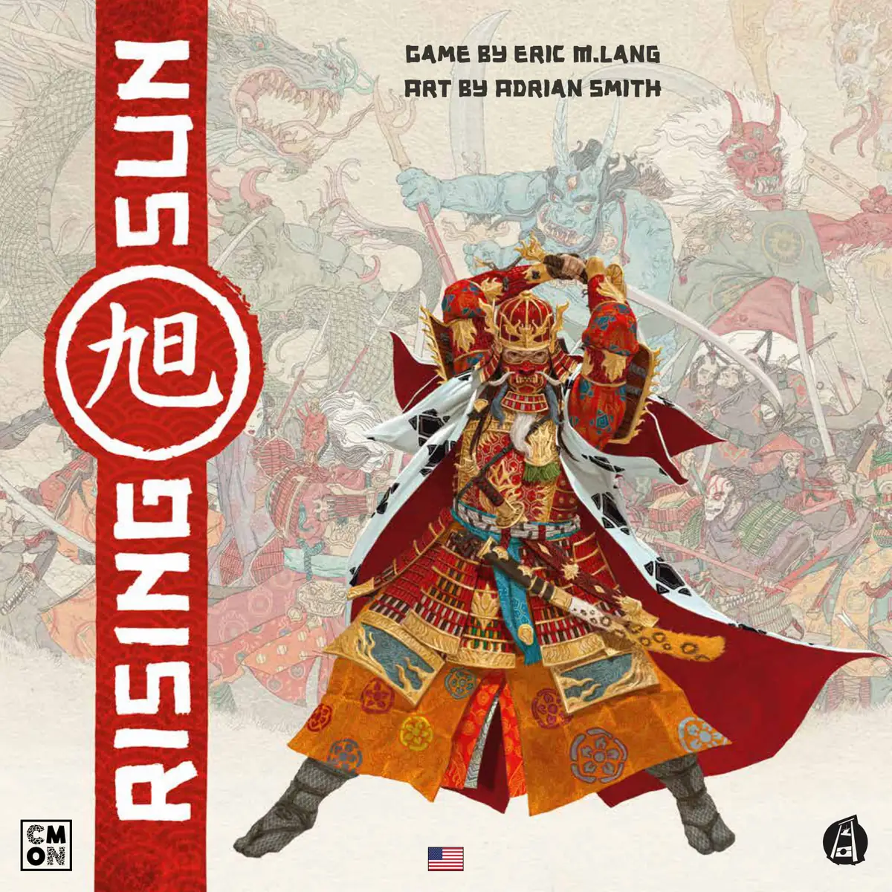
<figcaption>原版规则书 · 第 1 页（点击图片放大）</figcaption>
</figure>

<details class="mt-fold">
<summary>📝 第 1 页 AI 机翻对照（点击展开）</summary>
<div class="mt-body"><p>游戏设计：Eric M. Lang</p>

<p>美术：Adrian Smith</p></div>
</details>

<figure>
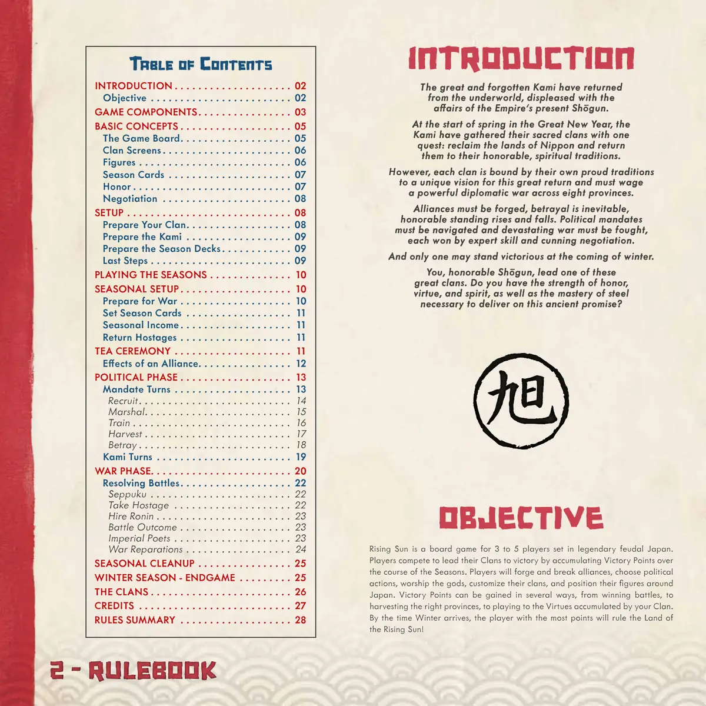
<figcaption>原版规则书 · 第 2 页（点击图片放大）</figcaption>
</figure>

<details class="mt-fold">
<summary>📝 第 2 页 AI 机翻对照（点击展开）</summary>
<div class="mt-body"><h2>2 - 规则书</h2>

<h2>2 - 规则书</h2>

<h2>引言</h2>

<p>伟大而被遗忘的 Kami 已从冥界归来，</p>

<p>对幕府将军当前的事务感到不满。</p>

<p>在新年的春天伊始，</p>

<p>Kami 已召集他们神圣的氏族，只有一个任务：收复日本（Nippon）的土地，</p>

<p>并将它们归还给他们光荣的精神传统。</p>

<p>然而，每个氏族都受自己自豪的传统束缚，</p>

<p>对这个伟大的回归有着独特的愿景，</p>

<p>必须在这八个省份展开强大的外交战争。</p>

<p>必须建立联盟，背叛不可避免，</p>

<p>荣誉地位起起落落。必须应对政治指令，</p>

<p>必须进行毁灭性的战争，每场战争都需凭借精湛的技巧和狡猾的谈判才能获胜。</p>

<p>而在冬季到来时，只有一人能够取得胜利。</p>

<p>您，尊敬的将军，领导着这些伟大氏族之一。</p>

<p>您是否拥有荣誉、美德和精神的力量，</p>

<p>以及履行这一古老承诺所需的钢铁技艺？</p>

<p>目标</p>

<p>《旭日东升》(Rising Sun) 是一款设定在传奇封建日本的3-5人版图游戏。</p>

<p>玩家们通过在四季过程中累积胜利点(Victory Points)来竞争，</p>

<p>带领自己的氏族走向胜利。玩家将建立和打破联盟，</p>

<p>选择政治行动，崇拜神明，定制自己的氏族，</p>

<p>并将自己的棋子放置在日本各地。胜利点可以通过多种方式获得，</p>

<p>从赢得战斗，到收获正确的省份，</p>

<p>再到利用氏族积累的美德(Virtues)进行游戏。</p>

<p>当冬季到来时，得分最高的玩家将统治日出之国！</p>

<p>目录</p>

<h2>引言 . . . . . . . . . . . . . . . . . . . . 02</h2>

<p>目标 . . . . . . . . . . . . . . . . . . . . . . . . . 02</p>

<h2>游戏组件 . . . . . . . . . . . . . . . . . . . 03</h2>

<h2>基本概念 . . . . . . . . . . . . . . . . . . . 05</h2>

<p>游戏版图 . . . . . . . . . . . . . . . . . . . 05</p>

<p>氏族屏幕 . . . . . . . . . . . . . . . . . . . . . . 06</p>

<p>棋子 . . . . . . . . . . . . . . . . . . . . . . . . . . . 06</p>

<p>季节卡牌 . . . . . . . . . . . . . . . . . . . . . . 07</p>

<p>荣誉 . . . . . . . . . . . . . . . . . . . . . . . . . . . 07</p>

<p>谈判 . . . . . . . . . . . . . . . . . . . . . . . 08</p>

<h2>设置 . . . . . . . . . . . . . . . . . . . . . . . . . . . . . 08</h2>

<p>准备你的氏族 . . . . . . . . . . . . . . . . . 08</p>

<p>准备 Kami . . . . . . . . . . . . . . . . . . . 09</p>

<p>准备季节牌库 . . . . . . . . . . . . . . . . . 09</p>

<p>最后步骤 . . . . . . . . . . . . . . . . . . . . . . . . . 09</p>

<h2>进行四季 . . . . . . . . . . . . . . . . . . . 10</h2>

<h2>季节设置 . . . . . . . . . . . . . . . . . . . 10</h2>

<p>准备战争 . . . . . . . . . . . . . . . . . . . . 10</p>

<p>设置季节卡牌 . . . . . . . . . . . . . . . . . . 11</p>

<p>季节收入 . . . . . . . . . . . . . . . . . . . 11</p>

<p>归还人质 . . . . . . . . . . . . . . . . . . . . 11</p>

<h2>茶道 . . . . . . . . . . . . . . . . . . . . . 11</h2>

<p>联盟的效果 . . . . . . . . . . . . . . . . . 12</p>

<h2>政治阶段 . . . . . . . . . . . . . . . . . . . . 13</h2>

<p>授权回合 . . . . . . . . . . . . . . . . . . . . . 13</p>

<p>招募 . . . . . . . . . . . . . . . . . . . . . . . . . . 14</p>

<p>集结 . . . . . . . . . . . . . . . . . . . . . . . . . 15</p>

<p>训练 . . . . . . . . . . . . . . . . . . . . . . . . . . . 16</p>

<p>收获 . . . . . . . . . . . . . . . . . . . . . . . . . 17</p>

<p>背叛 . . . . . . . . . . . . . . . . . . . . . . . . . . 18</p>

<p>神明回合 . . . . . . . . . . . . . . . . . . . . . . . . 19</p>

<h2>战争阶段 . . . . . . . . . . . . . . . . . . . . . . . . 20</h2>

<p>解决战斗 . . . . . . . . . . . . . . . . . . . 22</p>

<p>切腹 . . . . . . . . . . . . . . . . . . . . . . . . . 22</p>

<p>扣押人质 . . . . . . . . . . . . . . . . . . . . . 22</p>

<p>雇佣浪人 . . . . . . . . . . . . . . . . . . . . . . . 23</p>

<p>战斗结果 . . . . . . . . . . . . . . . . . . . . 23</p>

<p>帝国诗人 . . . . . . . . . . . . . . . . . . . . . 23</p>

<p>战争赔款 . . . . . . . . . . . . . . . . . . . 24</p>

<h2>季节清理 . . . . . . . . . . . . . . . . . . 25</h2>

<h2>冬季季节 - 游戏结束 . . . . . . . . . . 25</h2>

<h2>氏族 . . . . . . . . . . . . . . . . . . . . . . . . 26</h2>

<h2>制作人员 . . . . . . . . . . . . . . . . . . . . . . . . . . . 27</h2>

<h2>规则摘要 . . . . . . . . . . . . . . . . . . . . 28</h2></div>
</details>

<figure>
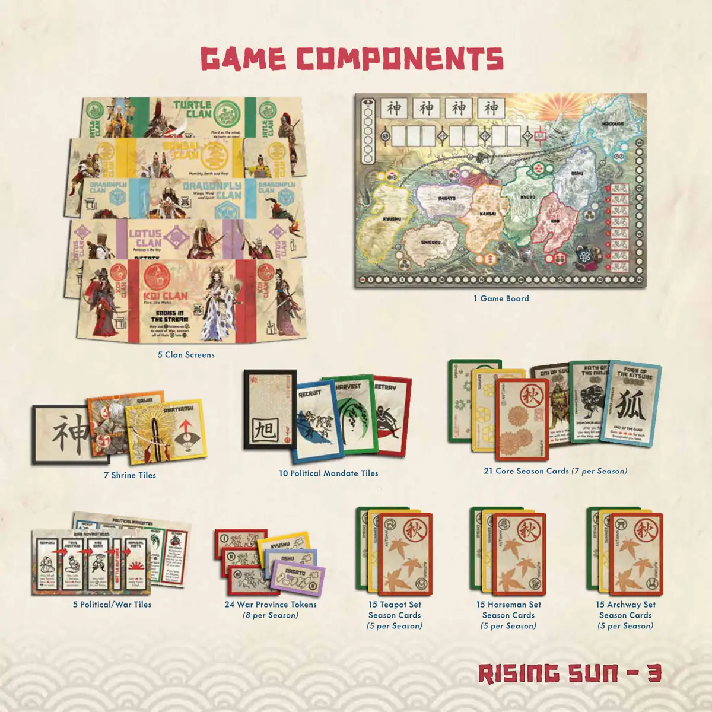
<figcaption>原版规则书 · 第 3 页（点击图片放大）</figcaption>
</figure>

<details class="mt-fold">
<summary>📝 第 3 页 AI 机翻对照（点击展开）</summary>
<div class="mt-body"><h2>旭日东升 - 3</h2>

<h2>旭日东升 - 3</h2>

<p>游戏组件</p>

<p>1个游戏版图</p>

<p>7个神社板块</p>

<p>5个氏族屏幕</p>

<p>5个政治/战争板块</p>

<p>24个战争省份指示物</p>

<p>（每季8个）</p>

<p>10个政治委托板块</p>

<p>21个核心季节卡牌（每季7个）</p>

<p>15个骑兵组</p>

<p>季节卡牌</p>

<p>（每季5个）</p>

<p>15个茶具组</p>

<p>季节卡牌</p>

<p>（每季5个）</p>

<p>15个拱门组</p>

<p>季节卡牌</p>

<p>（每季5个）</p></div>
</details>

<figure>
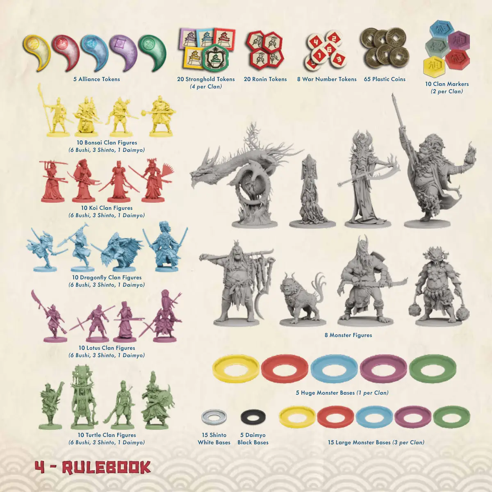
<figcaption>原版规则书 · 第 4 页（点击图片放大）</figcaption>
</figure>

<details class="mt-fold">
<summary>📝 第 4 页 AI 机翻对照（点击展开）</summary>
<div class="mt-body"><h2>4 - 规则书</h2>

<h2>4 - 规则书</h2>

<p>65个塑料币</p>

<p>8个战争数字指示物</p>

<p>20个要塞指示物</p>

<p>（每氏族4个）</p>

<p>5个联盟指示物</p>

<p>5个大名</p>

<p>黑色底座</p>

<p>15个神道教</p>

<p>白色底座</p>

<p>15个大型怪物底座（每氏族3个）</p>

<p>5个巨型怪物底座（每氏族1个）</p>

<p>20个浪人指示物</p>

<p>10个氏族标记</p>

<p>（每氏族2个）</p>

<p>8个怪物模型</p>

<p>10个盆栽氏族模型</p>

<p>（6个武士，3个神道教，1个大名）</p>

<p>10个锦鲤氏族模型</p>

<p>（6个武士，3个神道教，1个大名）</p>

<p>10个乌龟氏族模型</p>

<p>（6个武士，3个神道教，1个大名）</p>

<p>10个蜻蜓氏族模型</p>

<p>（6个武士，3个神道教，1个大名）</p>

<p>10个莲花氏族模型</p>

<p>（6个武士，3个神道教，1个大名）</p></div>
</details>

<figure>
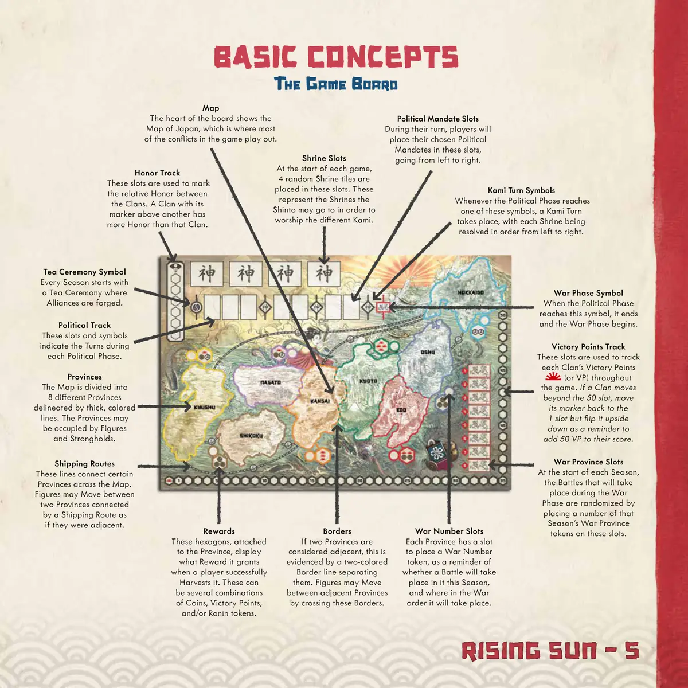
<figcaption>原版规则书 · 第 5 页（点击图片放大）</figcaption>
</figure>

<details class="mt-fold">
<summary>📝 第 5 页 AI 机翻对照（点击展开）</summary>
<div class="mt-body"><h2>旭日东升 - 5</h2>

<h2>旭日东升 - 5</h2>

<p>基本概念</p>

<p>游戏版图</p>

<p>地图</p>

<p>版图中央展示了日本地图，这是游戏中大多数冲突发生的地方。</p>

<p>省份</p>

<p>地图被划分为8个不同的省份，由粗彩色线条分隔。省份可以被角色和要塞占据。</p>

<p>边境</p>

<p>如果两个省份被视为相邻，则由双色边境线分隔它们。角色可以通过穿越这些边境在相邻省份之间移动。</p>

<p>航运路线</p>

<p>这些线条连接地图上的特定省份。角色可以通过连接两个省份的航运路线移动，就像它们相邻一样。</p>

<p>奖励</p>

<p>这些六边形附着在省份上，显示当玩家成功收获该省份时获得的奖励。这些奖励可以是金币、胜利点和/或浪人指示物的几种组合。</p>

<p>战争编号槽</p>

<p>每个省份有一个放置战争编号指示物的槽位，作为提醒，表明该省份在本季是否会发生战斗，以及在战争顺序中的位置。</p>

<p>战争省份槽</p>

<p>在每个季节开始时，战争阶段将要发生的战斗通过将该季节的战争省份指示物放置在这些槽位上进行随机化。</p>

<p>胜利点追踪槽</p>

<p>这些槽位用于追踪每个氏族在整个游戏中的胜利点（或VP）。如果一个氏族的标记超过了50槽位，将其标记移回1槽位，但将其翻转作为提醒，在其分数上加上50VP。</p>

<p>荣誉追踪槽</p>

<p>这些槽位用于标记氏族之间的相对荣誉。一个氏族的标记在另一个氏族上方的，则比该氏族拥有更多荣誉。</p>

<p>神社槽</p>

<p>在每局游戏开始时，4个随机神社板块放置在这些槽位中。这些代表神道可以前往的不同神社，以崇拜不同的神明。</p>

<p>政治追踪槽</p>

<p>这些槽位和符号表示每个政治阶段的回合。</p>

<p>茶会符号</p>

<p>每个季节以茶会开始，在此期间结成联盟。</p>

<p>政治指令槽</p>

<p>在玩家的回合中，玩家会将他们选择的政治指令从左到右放置在这些槽位中。</p>

<p>神明回合符号</p>

<p>每当政治阶段到达这些符号之一时，就会进行神明回合，每个神社从左到右依次解决。</p>

<p>战争阶段符号</p>

<p>当政治阶段到达此符号时，政治阶段结束，战争阶段开始。</p></div>
</details>

<figure>
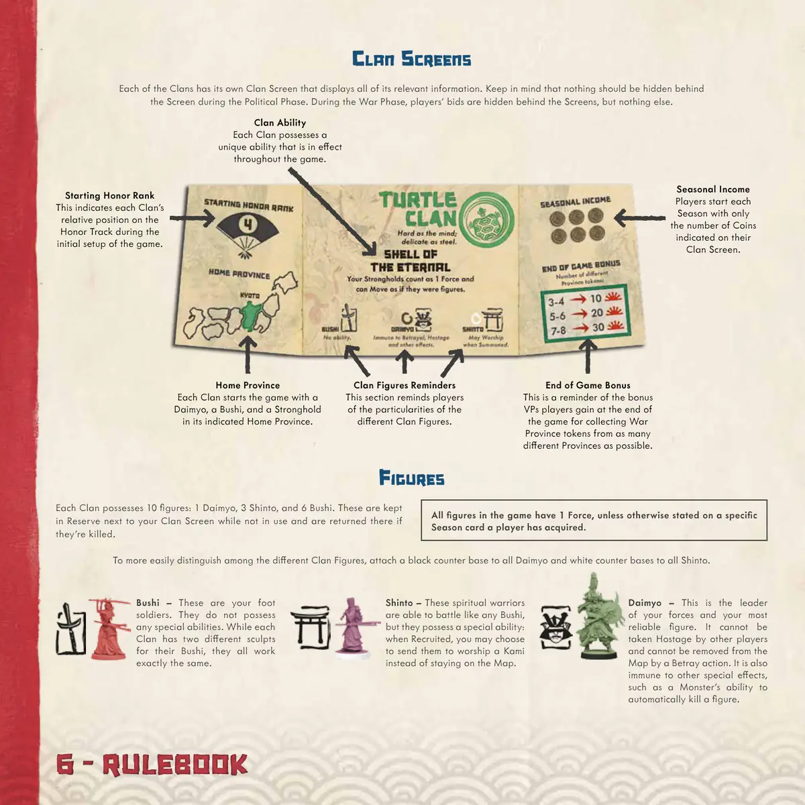
<figcaption>原版规则书 · 第 6 页（点击图片放大）</figcaption>
</figure>

<details class="mt-fold">
<summary>📝 第 6 页 AI 机翻对照（点击展开）</summary>
<div class="mt-body"><h2>6 - 规则书</h2>

<h2>6 - 规则书</h2>

<p>氏族屏幕</p>

<p>每个氏族都有自己的氏族屏幕，显示其所有相关信息。请注意，在政治阶段期间，屏幕后面不应有任何东西被隐藏。在战争阶段，玩家的竞标被隐藏在屏幕后面，但其他东西则不是。</p>

<p>棋子</p>

<p>每个氏族拥有10个棋子：1个大名，3名神道，6名武士。这些棋子在不使用时保存在氏族屏幕旁边的预备区中，如果被杀死则返回该处。</p>

<p>为了更容易区分不同的氏族棋子，请为所有大名 attach 一个黑色指示物底座，为所有神道 attach 一个白色指示物底座。</p>

<p>武士 – 这些是你的步兵。他们没有任何特殊能力。虽然每个氏族的武士有两种不同的雕塑，但它们的工作方式完全相同。</p>

<p>神道 – 这些精神战士能够像任何武士一样战斗，但他们拥有一种特殊能力：当被招募时，你可以选择让他们去崇拜神明而不是留在版图上。</p>

<p>大名 – 这是你军队的领导者，你最可靠的棋子。它不能被其他玩家扣为人质，也不能通过背叛行动从版图上移除。它也对其他特殊效果免疫，例如怪物自动杀死棋子的能力。</p>

<p>游戏中所有棋子都有1点武力，除非玩家获得的特定季节卡上另有说明。</p>

<p> 起始荣誉等级</p>

<p>这表示每个氏族在游戏初始设置期间在荣誉轨道上的相对位置。</p>

<p>家乡省份</p>

<p>每个氏族在游戏开始时在其指定的家乡省份拥有1个大名、1名武士和1座要塞。</p>

<p>氏族能力</p>

<p>每个氏族都拥有一种独特的能力，该能力在整个游戏过程中有效。</p>

<p>氏族棋子提醒</p>

<p>这部分提醒玩家不同氏族棋子的特殊性。</p>

<p>季节收入</p>

<p>玩家在每个季节开始时只有其氏族屏幕上显示数量的金币。</p>

<p>游戏结束奖励</p>

<p>这是玩家在游戏结束时因收集尽可能多不同省份的战争省份指示物而获得的VP奖励的提醒。</p></div>
</details>

<figure>
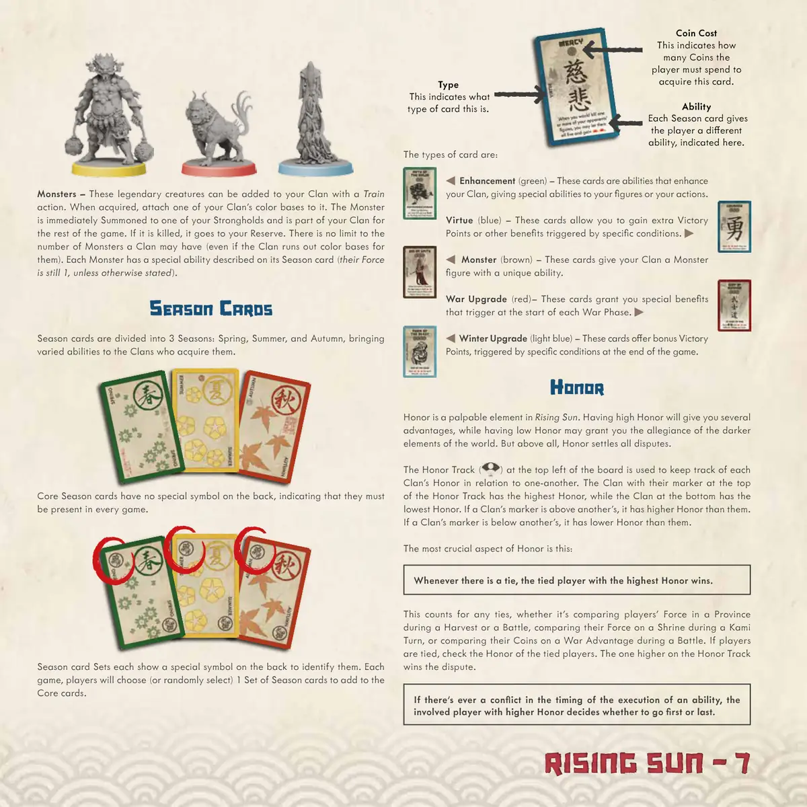
<figcaption>原版规则书 · 第 7 页（点击图片放大）</figcaption>
</figure>

<details class="mt-fold">
<summary>📝 第 7 页 AI 机翻对照（点击展开）</summary>
<div class="mt-body"><h2>旭日东升 - 7</h2>

<h2>旭日东升 - 7</h2>

<p>怪物 – 这些传说中的生物可以通过"训练"行动添加到你的氏族中。获得后，将你氏族的一个颜色底座附着到它上面。怪物立即被召唤到你的一座要塞中，并在游戏剩余时间内成为你氏族的一部分。如果它被杀死，它会进入你的预备区。氏族拥有的怪物数量没有限制（即使氏族用完了它们的颜色底座）。每个怪物都有其季节卡上描述的特殊能力（除非另有说明，其武力值仍为1）。</p>

<p>季节卡</p>

<p>季节卡分为3个季节：春季、夏季和秋季，为获得它们的氏族带来多样化的能力。</p>

<p>核心季节卡背面没有特殊符号，表示它们必须在每局游戏中都存在。</p>

<p>季节卡组背面都显示有特殊符号以标识它们。每局游戏中，玩家将选择（或随机选择）1组季节卡添加到核心卡中。</p>

<p>卡牌类型有：</p>

<ul>
  <li>强化（绿色）——这些卡牌是增强你氏族的能力，为你的单位或行动提供特殊能力。</li>
  <li>美德（蓝色）——这些卡牌允许你在满足特定条件时获得额外的胜利点数或其他收益。</li>
  <li>怪物（棕色）——这些卡牌为你的氏族提供一个具有独特能力的怪物单位。</li>
  <li>战争升级（红色）——这些卡牌赋予你在每个战争阶段开始时触发的特殊收益。</li>
  <li>冬季升级（浅蓝色）——这些卡牌提供额外的胜利点数，在游戏结束满足特定条件时触发。</li>
</ul>

<p>荣誉</p>

<p>荣誉在旭日东升中是一个具体存在的元素。拥有高荣誉会给你带来多种优势，而低荣誉则可能使你获得世界上黑暗势力的效忠。但最重要的是，荣誉解决所有争端。</p>

<p>版图左上角的荣誉轨道（</p>

<p>）用于追踪各氏族之间的荣誉相对关系。标记位于荣誉轨道顶部的氏族拥有最高荣誉，而位于底部的氏族则拥有最低荣誉。如果一个氏族的标记在另一个氏族之上，则其荣誉高于后者；如果在另一个氏族之下，则其荣誉低于后者。</p>

<p>荣誉最重要的方面是：</p>

<p>这适用于任何平局情况，无论是在收获或战斗中比较玩家在省份的武力值，在神灵回合中比较他们在神社上的武力值，还是在战斗中比较他们在战争优势上的金币数。如果玩家平局，则比较这些平局玩家的荣誉。荣誉轨道上位置更高的玩家赢得争议。</p>

<p>金币费用</p>

<p>这表示玩家</p>

<p>必须花费多少</p>

<p>金币来获得此卡牌。</p>

<p>能力</p>

<p>每张季节卡</p>

<p>都为玩家提供</p>

<p>不同的能力，</p>

<p>在此处说明。</p>

<p>每当出现平局时，荣誉最高的平局玩家获胜。</p>

<p>如果存在能力执行时机上的冲突，荣誉较高的相关玩家决定是先执行还是后执行。</p>

<p>类型</p>

<p>这表明这张卡牌是什么类型。</p></div>
</details>

<figure>
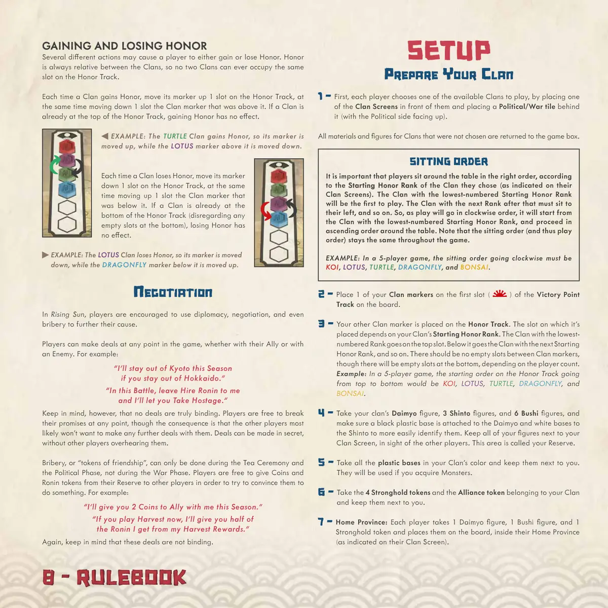
<figcaption>原版规则书 · 第 8 页（点击图片放大）</figcaption>
</figure>

<details class="mt-fold">
<summary>📝 第 8 页 AI 机翻对照（点击展开）</summary>
<div class="mt-body"><h2>8 - 规则书</h2>

<h2>8 - 规则书</h2>

<h2>获得与失去荣誉</h2>

<p>多种不同的行动可能导致玩家获得或失去荣誉。荣誉在各氏族之间总是相对的，因此没有两个氏族可以同时占据荣誉轨道上的同一个位置。</p>

<p>每当一个氏族获得荣誉时，将其指示物在荣誉轨道上向上移动1个位置，同时将其上方位置的氏族指示物向下移动1个位置。如果一个氏族已经位于荣誉轨道的顶部，获得荣誉则没有效果。</p>

<p>示例：龟氏族获得荣誉，因此其指示物被向上移动，而其上方的莲花氏族指示物被向下移动。</p>

<p>每当一个氏族失去荣誉时，将其指示物在荣誉轨道上向下移动1个位置，同时将其下方位置的氏族指示物向上移动1个位置。如果一个氏族已经位于荣誉轨道的底部（忽略底部的任何空位），失去荣誉则没有效果。</p>

<p>示例：莲花氏族失去荣誉，因此其指示物被向下移动，而其下方的蜻蜓氏族指示物被向上移动。</p>

<p>谈判</p>

<p>在旭日中，玩家被鼓励使用外交、谈判甚至贿赂来推进自己的事业。</p>

<p>玩家可以在游戏中的任何时刻达成交易，无论是与盟友还是与敌人。例如：</p>

<p>"这个季节我不会进入京都，如果你也不进入北海道。"</p>

<p>"在这场战斗中，让我雇佣浪人，我会让你俘虏人质。"</p>

<p>然而，请记住，没有任何交易是真正有约束力的。玩家可以在任何时候自由违背自己的承诺，但后果是其他玩家很可能不再愿意与他们进行任何进一步的交易。交易可以秘密进行，不被其他玩家听到。</p>

<p>贿赂，或称为"友谊的象征"，只能在茶道仪式和政治阶段进行，不能在战争阶段进行。玩家可以自由地从自己的储备中给予金币和浪人指示物给其他玩家，以试图说服他们做某事。例如：</p>

<p>"我会给你2个金币，让你这个季节与我结盟。"</p>

<p>"如果你现在进行收获，我会把我从收获奖励中获得的浪人分一半给你。"</p>

<p>同样，请记住这些交易没有约束力。</p>

<p>设置</p>

<p>准备你的氏族</p>

<p>1 - 首先，每个玩家通过选择一个氏族屏幕放在自己面前，并在其后面放置一张政治/战争板块（政治面朝上）来选择一个可用的氏族进行游戏。</p>

<p>未被选中的氏族的所有材料和棋子都放回游戏盒中。</p>

<p>2 - 将你的一个氏族指示物放在版图上的胜利点轨道的第一个位置()。</p>

<p>3 - 你的另一个氏族指示物被放在荣誉轨道上。其所处的位置取决于你氏族的起始荣誉等级。编号最低的氏族放在最顶部的位置。在其下方是起始等级次之的氏族。</p>

<p>荣誉等级，等等。氏族标记之间不应有空位，但底部会有空位，具体取决于玩家数量。</p>

<p>示例：在5人游戏中，荣誉轨道上从上到下的起始顺序应为锦鲤（KOI）、莲花（LOTUS）、龟（TURTLE）、蜻蜓（DRAGONFLY）和盆栽（BONSAI）。</p>

<p>4 - 拿起你氏族的大名（Daimyo）棋子、3神道（Shinto）棋子和6武士（Bushi）棋子，并确保大名棋子附有黑色塑料底座，神道棋子附有白色底座，以便更容易识别。将所有你的棋子放在你的氏族屏幕旁，让其他玩家能看到。这个区域被称为你的预备区（Reserve）。</p>

<p>5 - 拿起你氏族颜色的所有塑料底座并放在你旁边。如果你获得怪物（Monsters），它们将被使用。</p>

<p>6 - 拿起属于你氏族的4个要塞（Stronghold）标记和联盟（Alliance）标记，并放在你旁边。</p>

<p>7 - 家园省份：每个玩家拿起1大名棋子、1武士棋子和1要塞标记，并将它们放在版图上，位于他们的家园省份内（如他们的氏族屏幕所示）。</p>

<p>就座顺序</p>

<p>玩家必须根据他们选择的氏族的起始荣誉等级（如他们的氏族屏幕所示）以正确的顺序围坐在桌旁。起始荣誉等级数字最低的氏族将首先进行游戏。下一个等级的氏族必须坐在其左侧，依此类推。因此，由于游戏将按顺时针顺序进行，将从起始荣誉等级数字最低的氏族开始，然后按升序围绕桌子进行。请注意，就座顺序（因此也是游戏顺序）在整个游戏中保持不变。</p>

<p>示例：在5人游戏中，顺时针方向的就座顺序必须是锦鲤（KOI）、莲花（LOTUS）、龟（TURTLE）、蜻蜓（DRAGONFLY）和盆栽（BONSAI）。</p></div>
</details>

<figure>
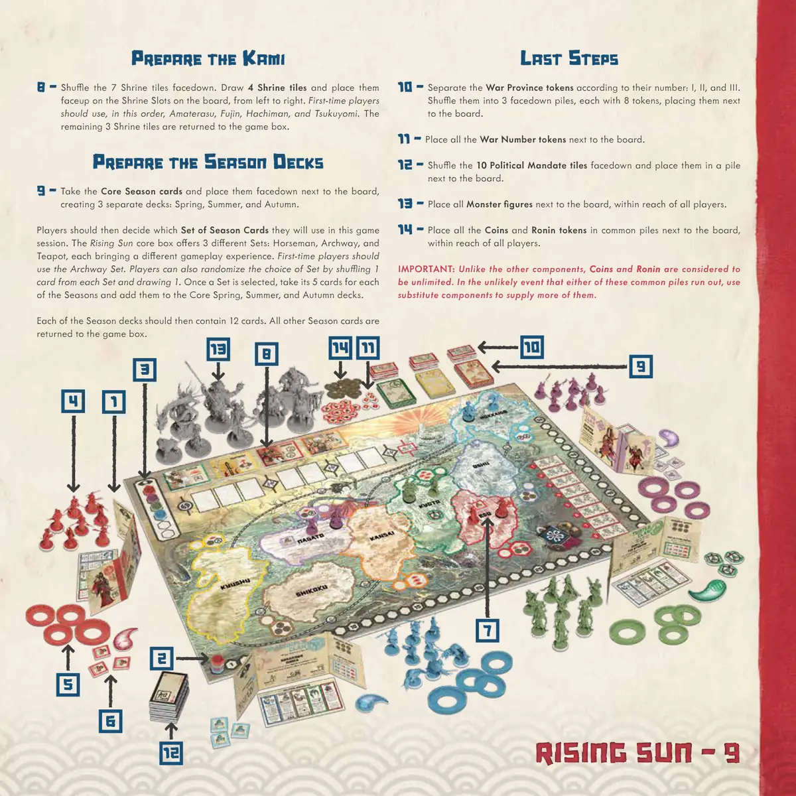
<figcaption>原版规则书 · 第 9 页（点击图片放大）</figcaption>
</figure>

<details class="mt-fold">
<summary>📝 第 9 页 AI 机翻对照（点击展开）</summary>
<div class="mt-body"><h2>升起的太阳 - 9</h2>

<h2>升起的太阳 - 9</h2>

<p>准备神明</p>

<p>8 - 将7个神社板块面朝下洗混。抽取4个神社板块，从左到右放置在版图上的神社槽位中。新手玩家应按以下顺序使用：天照(Amaterasu)、风神(Fujin)、八幡(Hachiman)和月读(Tsukuyomi)。剩余的3个神社板块放回游戏盒。</p>

<p>准备季节牌组</p>

<p>9 - 取出核心季节牌，将它们面朝下放在版图旁，组成3个独立的牌组：春季、夏季和秋季。</p>

<p>然后玩家应决定在本局游戏中使用哪一套季节牌。升起的太阳核心盒提供3套不同的牌组：骑兵(Horseman)、拱门(Archway)和茶壶(Teapot)，每套带来不同的游戏体验。新手玩家应使用拱门牌组。玩家也可以通过洗混每套牌各抽取1张来随机选择牌组。一旦选定一套牌，取出每季的5张牌，将它们添加到核心春季、夏季和秋季牌组中。</p>

<p>每个季节牌组应包含12张牌。所有其他季节牌放回游戏盒。</p>

<p>最后步骤</p>

<p>10 - 根据数字将战争省份指示物分开：I、II和III。将它们洗混成3个面朝下的牌堆，每个牌堆有8个指示物，放在版图旁。</p>

<p>11 - 将所有战争数字指示物放在版图旁。</p>

<p>12 - 将10张政治委托板块面朝下洗混，放在版图旁的一个牌堆中。</p>

<p>13 - 将所有怪物模型放在版图旁，所有玩家都能拿到的地方。</p>

<p>14 - 将所有金币和浪人指示物放在版图旁的公共牌堆中，所有玩家都能拿到的地方。</p>

<p>重要提示：与其他组件不同，金币和浪人被视为无限量。在极不可能的情况下，如果这些公共牌堆中的任何一个用完，请使用替代组件来补充更多。</p></div>
</details>

<figure>
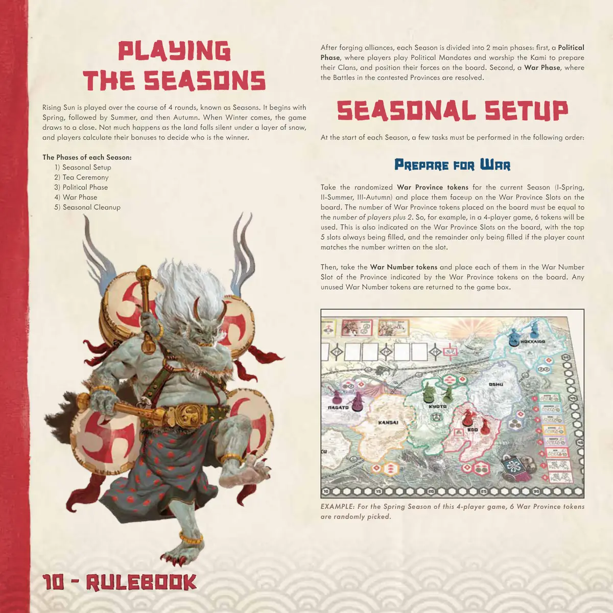
<figcaption>原版规则书 · 第 10 页（点击图片放大）</figcaption>
</figure>

<details class="mt-fold">
<summary>📝 第 10 页 AI 机翻对照（点击展开）</summary>
<div class="mt-body"><h2>10 - 规则书</h2>

<h2>10 - 规则书</h2>

<p>玩转</p>

<p>四季</p>

<p>旭日之玩贯穿4个回合，称为四季。从春季开始，接着是夏季，然后是秋季。当冬季来临时，游戏接近尾声。大地在积雪下沉寂，没有太多事情发生，玩家们计算自己的奖励以决定谁是赢家。</p>

<p>每个四季的阶段：</p>

<h3>1) 季节设置</h3>

<h3>2) 茶会</h3>

<h3>3) 政治阶段</h3>

<h3>4) 战争阶段</h3>

<h3>5) 季节清理</h3>

<p>在结成联盟后，每个四季分为2个主要阶段：首先是政治阶段，玩家们在此阶段执行政治令牌并崇拜神明以准备他们的氏族，并在版图上部署他们的力量。其次是战争阶段，解决争议省份中的战斗。</p>

<p>季节设置</p>

<p>在每个四季开始时，必须按以下顺序执行几项任务：</p>

<p>备战</p>

<p>取出当前四季（I-春季、II-夏季、III-秋季）的随机化战争省份指示物，并将它们正面朝上放置在版图上的战争省份槽位上。放置在版图上的战争省份指示物数量必须等于玩家数量加2。因此，例如，在4人游戏中，将使用6个指示物。版图上的战争省份槽位上也标明了这一点，前5个槽位总是被填满，只有当玩家数量与槽位上标注的数字相匹配时，其余槽位才会被填满。</p>

<p>然后，取出战争数字指示物，并将每个指示物放置在版图上战争省份指示物所指示的省份的战争数字槽位中。任何未使用的战争数字指示物都放回游戏盒中。</p>

<p>示例：在这个4人游戏的春季，随机抽取了6个战争省份指示物。</p></div>
</details>

<figure>
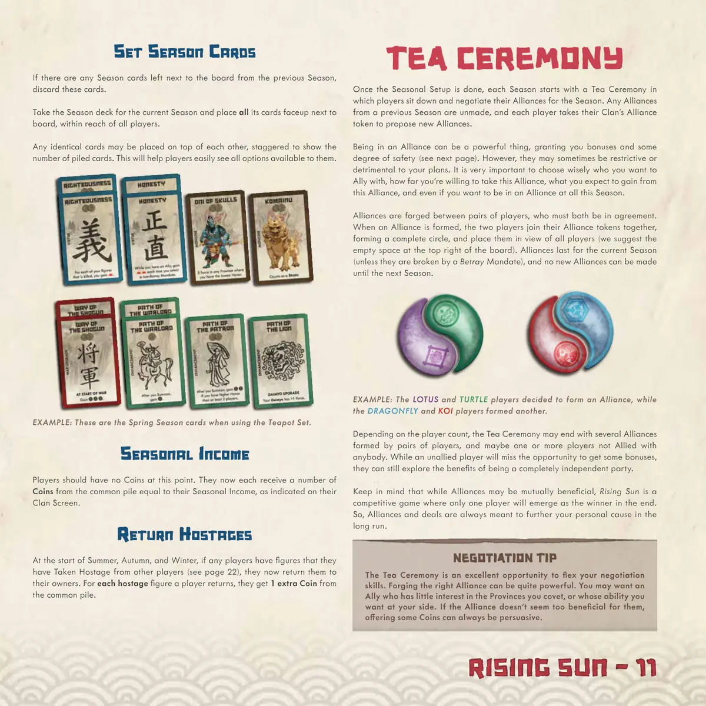
<figcaption>原版规则书 · 第 11 页（点击图片放大）</figcaption>
</figure>

<details class="mt-fold">
<summary>📝 第 11 页 AI 机翻对照（点击展开）</summary>
<div class="mt-body"><h2>旭日东升 - 11</h2>

<h2>旭日东升 - 11</h2>

<p>设置季节卡</p>

<p>如果版图旁边有前一季节留下的任何季节卡，将这些卡弃掉。</p>

<p>取用当前季节的季节牌库，将其所有牌面朝上放在版图旁边，所有玩家都能拿到。</p>

<p>相同的牌可以叠放在彼此上面，交错摆放以显示堆叠卡牌的数量。这将帮助玩家轻松查看他们所有的可用选项。</p>

<p>示例：这是使用茶具套件时的春季季节卡。</p>

<p>季节性收入</p>

<p>此时玩家应该没有任何金币。他们现在从公共堆中各自获得等于其季节性收入数量的金币，数量在其氏族屏幕上标明。</p>

<p>归还人质</p>

<p>在夏季、秋季和冬季开始时，如果有玩家拥有他们从其他玩家那里扣押的人质（见第22页），他们现在将其归还给所有者。玩家每归还一个人质棋子，他们可以从公共堆中获得1个额外金币。</p>

<p>茶会</p>

<p>季节设置完成后，每个季节以茶会开始，玩家们坐下来协商他们本季节的联盟。前一季节的任何联盟都会解除，每位玩家拿取自己氏族的联盟指示物来提议建立新的联盟。</p>

<p>加入联盟可能是一件强大的事情，能为你提供奖励和一定程度的安全感（见下一页）。然而，它们有时可能会对你的计划有所限制或造成损害。明智地选择你想与谁结盟，你愿意将这个联盟发展到什么程度，你期望从中获得什么，甚至是否要在本季节加入联盟，这些都是非常重要的。</p>

<p>联盟是在两位玩家之间建立的，双方必须达成一致。当联盟形成时，两位玩家将他们的联盟指示物连接在一起，形成一个完整的圆圈，并将其放在所有玩家都能看到的位置（我们建议放在版图右上角的空白处）。联盟持续到当前季节结束（除非被背叛指令打破），直到下一个季节才能建立新的联盟。</p>

<p>示例：莲花和乌龟玩家决定结成联盟，而蜻蜓和锦鲤玩家则结成了另一个联盟。</p>

<p>根据玩家数量，茶会结束时可能会形成几对玩家之间的联盟，可能还有一位或多位玩家没有与任何人结盟。虽然未结盟的玩家会错失获得一些奖励的机会，但他们仍然可以探索作为完全独立一方的优势。</p>

<p>请记住，虽然联盟可能对双方都有利，但旭日东升是一款竞争性游戏，最终只有一位玩家会成为赢家。因此，联盟和交易总是旨在长远地促进你个人的事业。</p>

<p>谈判技巧</p>

<p>茶道是展示你谈判技巧的绝佳机会。建立正确的联盟可以非常强大。你可能想要一位盟友，他对你所觊觎的省份兴趣不大，或者你希望他的能力能在你这边。如果联盟对他们来说似乎不太有利，提供一些金币总是很有说服力的。</p></div>
</details>

<figure>
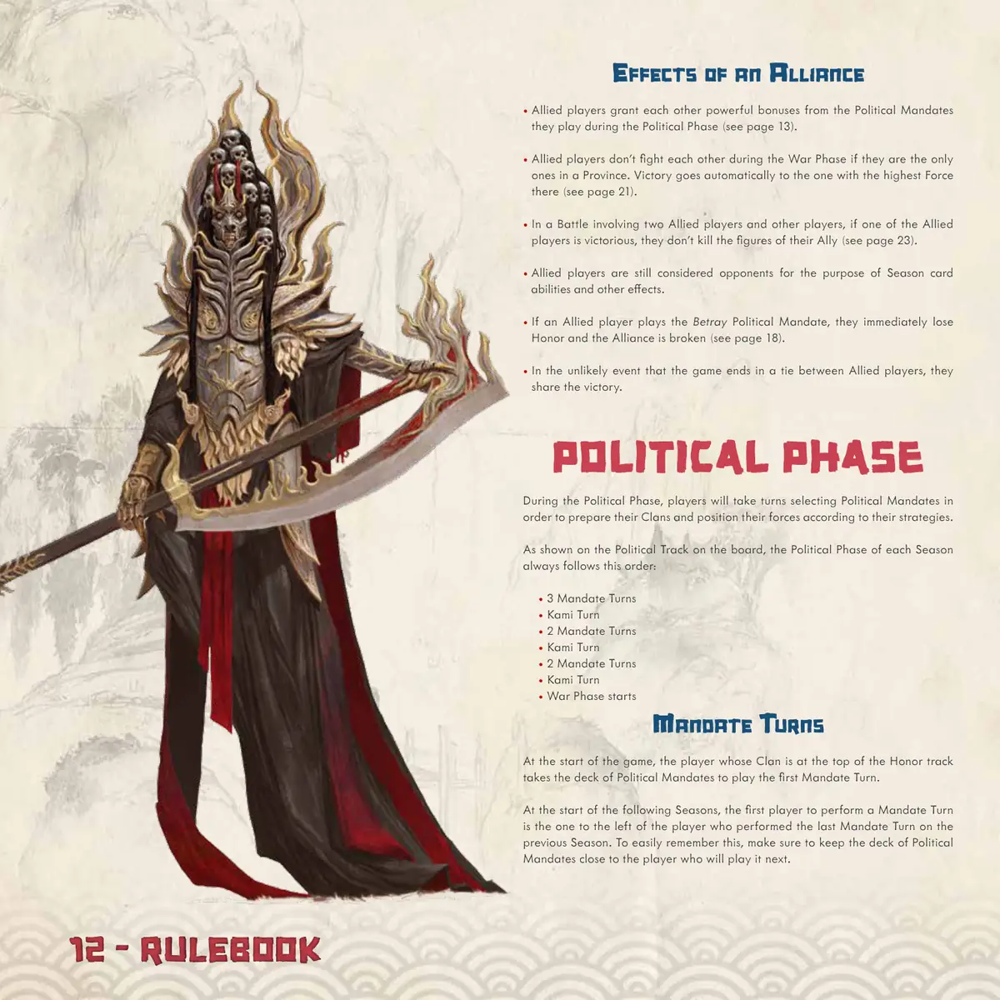
<figcaption>原版规则书 · 第 12 页（点击图片放大）</figcaption>
</figure>

<details class="mt-fold">
<summary>📝 第 12 页 AI 机翻对照（点击展开）</summary>
<div class="mt-body"><h2>12 - 规则书</h2>

<h2>12 - 规则书</h2>

<p>联盟的效果</p>

<p>• 联盟玩家在政治阶段（见第13页）打出政治委托时，会互相给予强大的加成。</p>

<p>• 如果联盟玩家是某个省份中唯一的玩家，他们在战争阶段不会互相战斗。胜利自动归属于该省份中武力值最高的玩家（见第21页）。</p>

<p>• 在涉及两名联盟玩家和其他玩家的战斗中，如果一名联盟玩家获胜，他们不会杀死其盟友的棋子（见第23页）。</p>

<p>• 出于季节牌能力和其他效果的目的，联盟玩家仍被视为对手。</p>

<p>• 如果联盟玩家打出《背叛》政治委托，他们将立即失去荣誉，联盟破裂（见第18页）。</p>

<p>• 在联盟玩家之间出现平局的极少数情况下，他们将共享胜利。</p>

<p>政治阶段</p>

<p>在政治阶段，玩家将轮流选择政治委托，以根据他们的策略准备氏族并部署其力量。</p>

<p>如版图上的政治轨道所示，每个季节的政治阶段总是遵循以下顺序：</p>

<p>• 3个委托回合</p>

<p>• 神明回合</p>

<p>• 2个委托回合</p>

<p>• 神明回合</p>

<p>• 2个委托回合</p>

<p>• 神明回合</p>

<p>• 战争阶段开始</p>

<p>委托回合</p>

<p>游戏开始时，荣誉轨道顶端的玩家氏族玩家拿取政治委托牌组来执行第一个委托回合。</p>

<p>在接下来的季节中，执行第一个委托回合的玩家是上一季节执行最后一个委托回合的玩家左侧的玩家。为便于记忆，请确保将政治委托牌组放在下一位将要执行它的玩家附近。</p></div>
</details>

<figure>
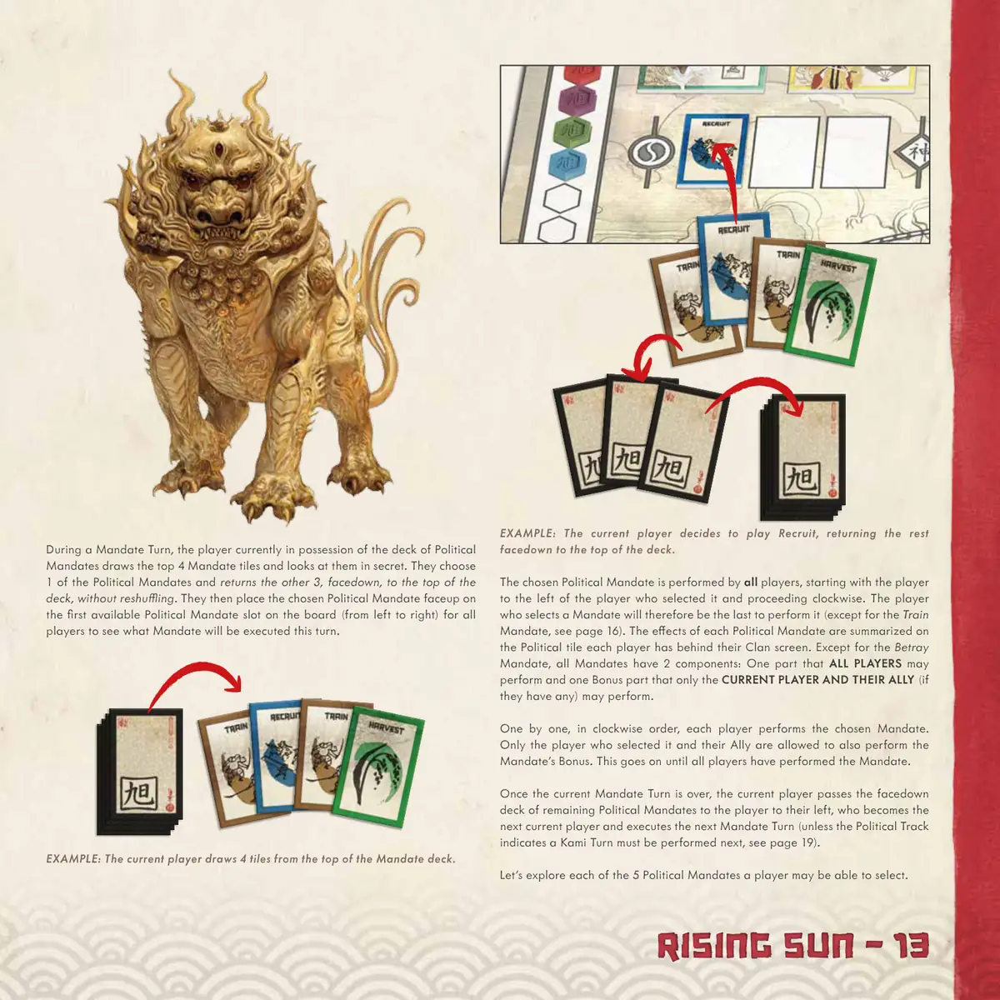
<figcaption>原版规则书 · 第 13 页（点击图片放大）</figcaption>
</figure>

<details class="mt-fold">
<summary>📝 第 13 页 AI 机翻对照（点击展开）</summary>
<div class="mt-body"><h2>旭日东升 - 13</h2>

<p>在命令回合中，当前持有政治命令牌库的玩家从牌库顶摸取4张命令板块并秘密查看。他们选择1张政治命令，将另外3张面朝下放回牌库顶部，不重新洗牌。然后将选中的政治命令面朝上放在版图上第一个可用的政治命令槽位（从左到右），所有玩家都能看到本回合将要执行哪项命令。</p>

<p>示例：当前玩家从命令牌库顶部摸取4张板块。</p>

<p>示例：当前玩家决定执行招募命令，将其他命令面朝下放回牌库顶部。</p>

<p>所有玩家执行选中的政治命令，从选择该命令的玩家左侧玩家开始，顺时针进行。因此，选择命令的玩家将是最后一个执行该命令的玩家（火车命令除外，见第16页）。每项政治命令的效果总结在每个玩家氏族屏后方的政治板块上。除了背叛命令外，所有命令都有2个部分：所有玩家都可以执行的部分，以及只有当前玩家及其盟友（如果有）可以执行的奖励部分。</p>

<p>玩家按顺时针顺序逐一执行选中的命令。只有选择该命令的玩家及其盟友才允许执行命令的奖励部分。这个过程持续进行，直到所有玩家都执行完该命令。</p>

<p>一旦当前命令回合结束，当前玩家将剩余的政治命令牌库（面朝下）传递给其左侧的玩家，该玩家成为下一个当前玩家并执行下一个命令回合（除非政治轨道指示必须执行下一个神明回合，见第19页）。</p>

<p>让我们来探索玩家可能能够选择的5种政治命令中的每一种。</p></div>
</details>

<figure>
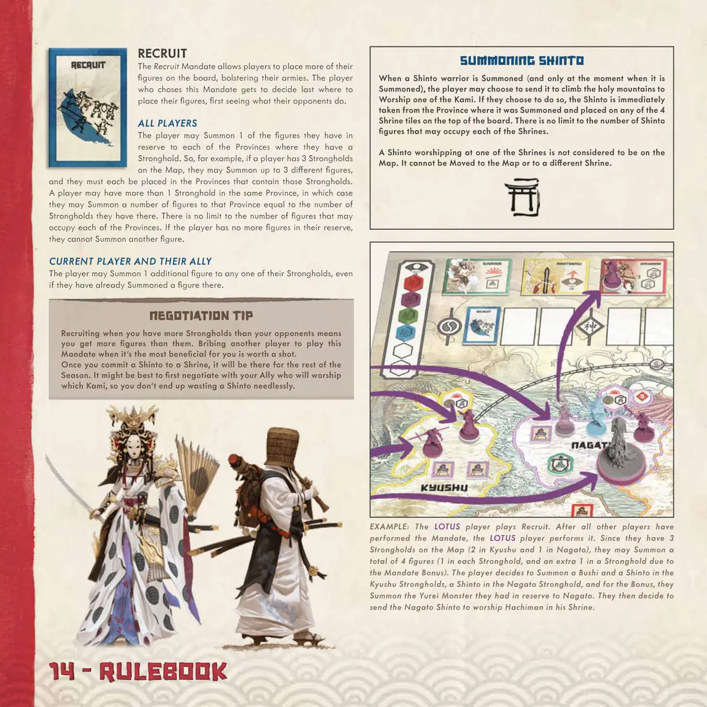
<figcaption>原版规则书 · 第 14 页（点击图片放大）</figcaption>
</figure>

<details class="mt-fold">
<summary>📝 第 14 页 AI 机翻对照（点击展开）</summary>
<div class="mt-body"><h2>14 - 规则书</h2>

<h2>14 - 规则书</h2>

<h2>招募</h2>

<p>招募法令允许玩家在版图上放置更多的己方棋子，增强他们的军队。选择此法令的玩家可以决定最后在哪里放置他们的棋子，首先看到他们的对手做了什么。</p>

<h2>所有玩家</h2>

<p>玩家可以将他们储备中的1个棋子召唤到他们拥有要塞的每个省份。因此，例如，如果一个玩家在地图上有3个要塞，他们可以召唤多达3个不同的棋子，并且每个棋子必须放置在包含那些要塞的省份中。</p>

<p>一个玩家可以在同一个省份拥有多个要塞，在这种情况下，他们可以召唤到该省份的棋子数量等于他们在该省份拥有的要塞数量。每个省份可以容纳的棋子数量没有限制。如果玩家在储备中没有更多的棋子，他们就不能再召唤棋子。</p>

<h2>当前玩家及其盟友</h2>

<p>玩家可以将1个额外的棋子召唤到他们任何一个要塞，即使他们已经在那里召唤了一个棋子。</p>

<p>示例：莲花玩家执行招募。在其他所有玩家执行完法令后，莲花玩家执行它。由于他们在地图上有3个要塞（2个在九州，1个在长门），他们总共可以召唤4个棋子（每个要塞1个，由于法令奖励额外1个）。玩家决定在九州要塞召唤一个武士和一个神道，在长门要塞召唤一个神道，对于奖励，他们将储备中的妖怪召唤到长门。然后他们决定派长门的那个神道去他的神社崇拜八幡。</p>

<p>谈判技巧</p>

<p>当你拥有比对手更多的要塞时进行招募，意味着你能获得比他们更多的棋子。当这个法令对你最有利时，贿赂另一个玩家来执行它是值得一试的。</p>

<p>一旦你将一个神道派往神社，它将在整个季节期间留在那里。最好先与你的盟友谈判谁将崇拜哪位神明，这样你就不会白白浪费一个神道。</p>

<h2>召唤神道</h2>

<p>当一个神道战士被召唤时（并且仅在召唤的那一刻），玩家可以选择派它攀登圣山去崇拜一位神明。如果他们选择这样做，神道会立即从它被召唤的省份移除，并放置在版图顶部的4个神社板块中的任何一个上。每个神社可以容纳的神道棋子数量没有限制。</p>

<p>在神社中崇拜的神道不被认为是在地图上。它不能被移动到地图上或不同的神社。</p></div>
</details>

<figure>
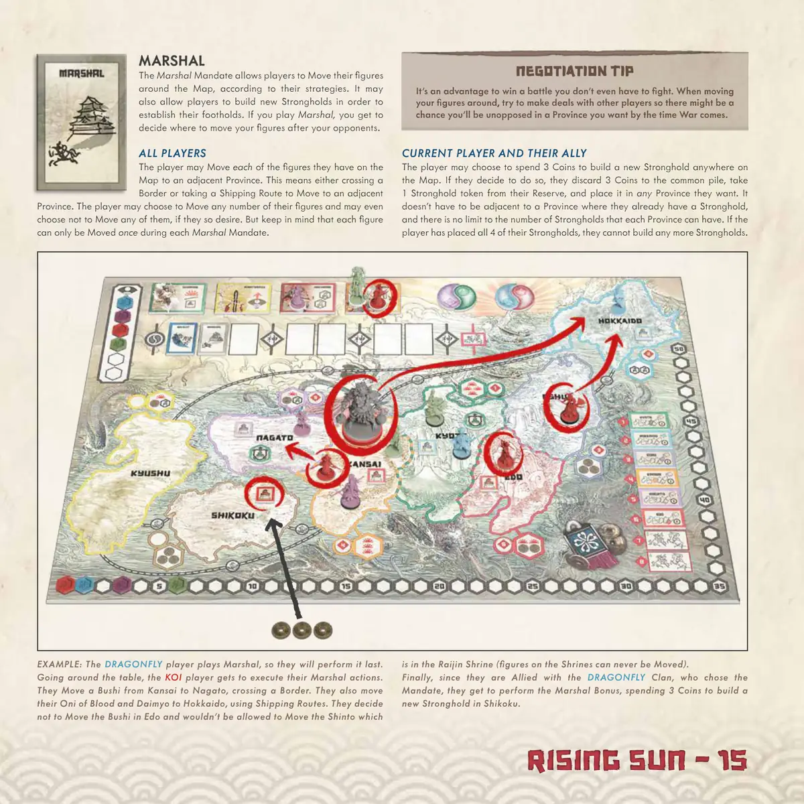
<figcaption>原版规则书 · 第 15 页（点击图片放大）</figcaption>
</figure>

<details class="mt-fold">
<summary>📝 第 15 页 AI 机翻对照（点击展开）</summary>
<div class="mt-body"><h2>升起的太阳 - 15</h2>

<h2>元帅</h2>

<p>元帅指令允许玩家根据他们的策略在地图上移动他们的棋子。它也可能允许玩家建造新的要塞以建立他们的立足点。如果你选择元帅，你可以在你的对手之后决定移动你的棋子的位置。</p>

<h2>所有玩家</h2>

<p>玩家可以将他们地图上的每个棋子移动到一个相邻的省份。这意味着要么穿过边界，要么通过航运路线移动到相邻的省份。玩家可以选择移动任意数量的棋子，甚至可以选择不移动任何棋子，如果他们愿意的话。但请记住，每个棋子在每次元帅指令期间只能被移动一次。</p>

<h2>当前玩家及其盟友</h2>

<p>玩家可以选择花费3枚金币在地图上的任何位置建造一个新的要塞。如果他们决定这样做，他们将3枚金币弃入公共堆，从他们的储备中取出1个要塞指示物，并将其放置在他们想要的任何省份。它不必与他们已有要塞的省份相邻，而且每个省份拥有的要塞数量没有限制。如果玩家已经放置了全部4个要塞，他们不能再建造更多要塞。</p>

<p>谈判提示</p>

<p>赢得一场你甚至不必参加的战斗是一种优势。在移动你的棋子时，尝试与其他玩家达成交易，这样在战争来临时，你有可能在你想要的省份上不受阻拦。</p>

<p>示例：蜻蜓玩家选择元帅，因此他们将最后执行。轮流进行，锦鲤玩家执行他们的元帅行动。他们将一个武士从关西移动到长门，穿过一个边界。他们还使用航运路线将他们的血鬼和大名移动到北海道。他们决定不移动江户的武士，并且不允许移动位于雷神神社的神道（神社上的棋子永远不能移动）。最后，由于他们与选择指令的蜻蜓氏族结盟，他们可以执行元帅奖励，花费3枚金币在四国建造一个新的要塞。</p></div>
</details>

<figure>
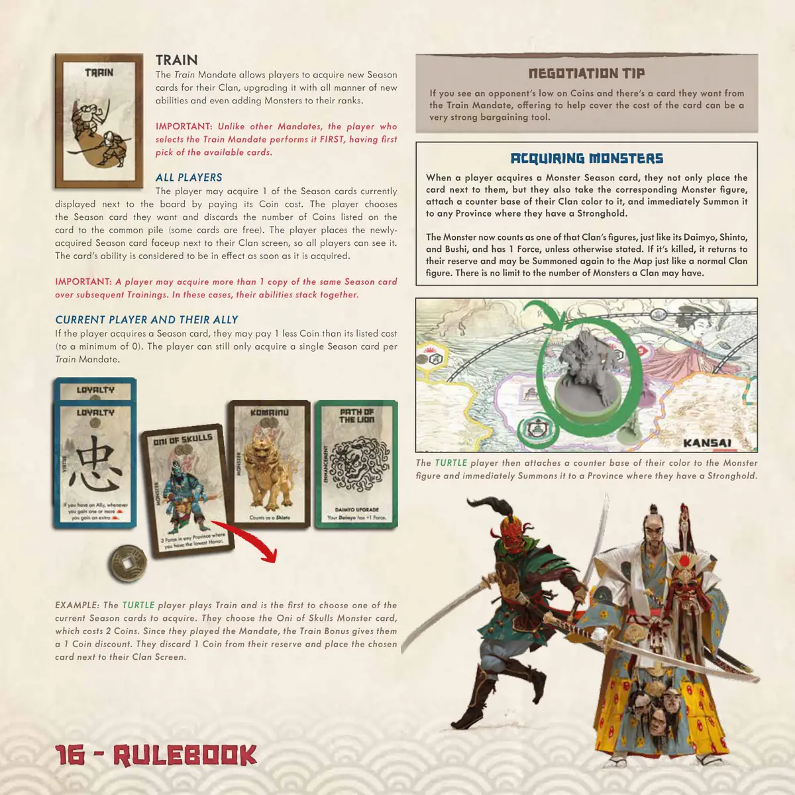
<figcaption>原版规则书 · 第 16 页（点击图片放大）</figcaption>
</figure>

<details class="mt-fold">
<summary>📝 第 16 页 AI 机翻对照（点击展开）</summary>
<div class="mt-body"><h2>16 - 规则书</h2>

<h2>16 - 规则书</h2>

<h2>训练</h2>

<p>训练指令允许玩家为他们的氏族获取新的季节卡牌，用各种新能力升级氏族，甚至将怪物加入他们的行列。</p>

<p>重要提示：与其他指令不同，选择训练指令的玩家首先执行它，拥有可用卡牌的优先选择权。</p>

<h2>所有玩家</h2>

<p>玩家可以通过支付其金币费用来获取当前展示在版图旁的一张季节卡牌。玩家选择他们想要的那张季节卡牌，并将卡牌上列明数量的金币弃入公共堆（有些卡牌是免费的）。玩家将新获取的季节卡牌面朝上放在他们的氏族屏旁边，以便所有玩家都能看到。卡牌的能力在获取后立即生效。</p>

<p>重要提示：玩家可以在后续的训练中获取多张相同季节卡牌。在这种情况下，它们的能力会叠加。</p>

<h2>当前玩家及其盟友</h2>

<p>如果玩家获取季节卡牌，他们可以比列明费用少支付1枚金币（最低为0）。玩家在一次训练指令中仍只能获取一张季节卡牌。</p>

<p>示例：龟玩家执行训练，是第一个选择获取当前季节卡牌的玩家。他们选择了骷髅鬼怪怪物卡牌，该卡牌需要2枚金币。由于他们执行了该指令，训练奖励给予他们1枚金币的折扣。他们从储备中弃置1枚金币，并将选中的卡牌放在他们的氏族屏旁边。</p>

<p>然后，龟玩家将一个他们氏族颜色的底座指示物附着在怪物模型上，并立即将其召唤到他们拥有要塞的省份。</p>

<p>获取怪物</p>

<p>当玩家获取怪物季节卡牌时，他们不仅将卡牌放在自己旁边，还要取出相应的怪物模型，将一个他们氏族颜色的底座指示物附着在上面，并立即将其召唤到他们拥有要塞的任何省份。</p>

<p>该怪物现在被视为该氏族的一个模型，就像他们的大名、神道和武士一样，拥有1点战力，除非另有说明。如果怪物被消灭，它会回到玩家的储备中，并可以像普通氏族模型一样再次被召唤到地图上。一个氏族拥有的怪物数量没有限制。</p>

<p>谈判技巧</p>

<p>如果你看到对手金币不足，并且他们想要训练指令中的一张卡牌，提出帮助支付卡牌费用可以是一个非常强大的谈判工具。</p></div>
</details>

<figure>
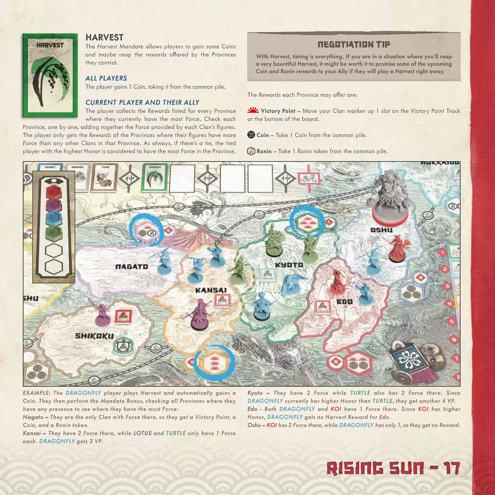
<figcaption>原版规则书 · 第 17 页（点击图片放大）</figcaption>
</figure>

<details class="mt-fold">
<summary>📝 第 17 页 AI 机翻对照（点击展开）</summary>
<div class="mt-body"><h2>旭日东升 - 17</h2>

<h2>旭日东升 - 17</h2>

<h2>收获</h2>

<p>收获法令允许玩家获得一些金币，并可能收获他们控制的省份提供的奖励。</p>

<h2>所有玩家</h2>

<p>玩家获得1枚金币，从公共堆中取走。</p>

<h2>当前玩家及其盟友</h2>

<p>玩家收集他们当前在每个省份中拥有最多势力的所有奖励。逐一检查每个省份，将每个氏族的棋子提供的势力相加。</p>

<p>玩家只获得那些省份的奖励，其中他们的棋子势力比其他任何氏族在该省份的势力都高。一如既往，如果出现平局，荣誉最高的平局玩家被认为在该省份拥有最多势力。</p>

<p>每个省份可能提供的奖励有：</p>

<p>胜利点 - 将你的氏族标记在版图底部的胜利点轨道上向前移动1格。</p>

<p>金币 - 从公共堆中取走1枚金币。</p>

<p>浪人 - 从公共堆中取走1个浪人指示物。</p>

<p>示例：蜻蜓玩家执行收获，自动获得1枚金币。然后他们执行法令奖励，检查他们有任何存在的所有省份，看他们在哪些省份拥有最多势力：</p>

<p>长门 - 他们是那里唯一有势力的氏族，因此他们获得1个胜利点、1枚金币和1个浪人指示物。</p>

<p>关西 - 他们在那里有2点势力，而莲花和龟只有1点势力。蜻蜓获得3个VP。</p>

<p>京都 - 他们有2点势力，而龟在那里也有2点势力。由于蜻蜓当前比龟拥有更高的荣誉，他们又获得4个VP。</p>

<p>江户 - 蜻蜓和锦鲤在那里都有1点势力。由于锦鲤拥有更高的荣誉，蜻蜓在江户没有获得收获奖励。</p>

<p>奥州 - 锦鲤在那里有2点势力，而蜻蜓只有1点，所以他们没有获得奖励。</p>

<p>谈判提示</p>

<p>对于收获来说，时机至关重要。如果你将获得非常丰盛的收获，值得考虑的是，如果你的盟友会立即执行收获，承诺给他们一些即将到来的金币和浪人奖励可能是值得的。</p></div>
</details>

<figure>
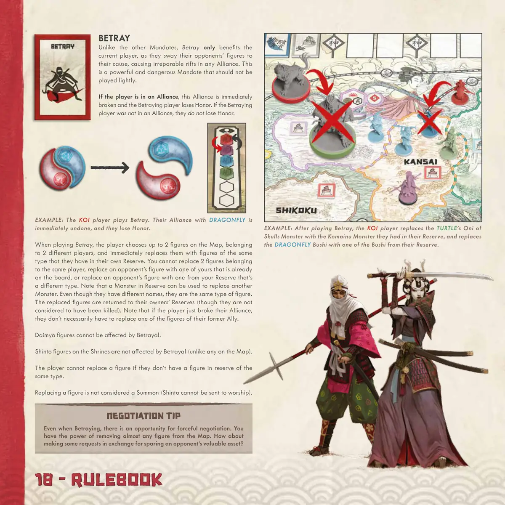
<figcaption>原版规则书 · 第 18 页（点击图片放大）</figcaption>
</figure>

<details class="mt-fold">
<summary>📝 第 18 页 AI 机翻对照（点击展开）</summary>
<div class="mt-body"><h2>18 - 规则书</h2>

<h2>18 - 规则书</h2>

<h2>背叛</h2>

<p>与其他指令不同，背叛只对当前玩家有利，因为他们将对手的棋子拉拢到自己这边，在任何联盟中造成不可弥补的裂痕。这是一个强大而危险的指令，不应轻易使用。</p>

<p>如果玩家处于联盟中，该联盟立即破裂，背叛玩家将失去荣誉。如果背叛玩家没有处于联盟中，他们不会失去荣誉。</p>

<p>示例：蜻蜓玩家使用背叛。他们与蜻蜓的联盟立即解除，他们失去荣誉。</p>

<p>使用背叛时，玩家选择地图上最多2个属于2个不同玩家的棋子，并立即用自己的储备库中相同类型的棋子替换它们。你不能替换属于同一玩家的2个棋子，用自己已经在棋盘上的棋子替换对手的棋子，或者用自己储备库中不同类型的棋子替换对手的棋子。请注意，储备库中的怪物可以用来替换另一个怪物。尽管它们名称不同，但它们是相同类型的棋子。被替换的棋子返回到其所有者的储备库中（尽管它们不被视为已被杀死）。请注意，如果玩家刚刚打破了他们的联盟，他们不一定必须替换其前盟友的一个棋子。</p>

<p>大名棋子不受背叛影响。</p>

<p>神社上的神明棋子不受背叛影响（与地图上的任何神明棋子不同）。</p>

<p>如果玩家没有相同类型的棋子在储备库中，则不能替换棋子。</p>

<p>替换棋子不被视为召唤（神明棋子不能被派去参拜）。</p>

<p>示例：使用背叛后，蜻蜓玩家用他们储备库中的狛犬怪物替换了龟的骷髅头怪物，并用他们储备库中的一个武士替换了蜻蜓的武士。</p>

<p>谈判技巧</p>

<p>即使在进行背叛时，仍有机会进行强力谈判。你拥有从地图上移除几乎任何棋子的权力。何不通过承诺保留对手的有价值资产作为交换来提出一些要求？</p></div>
</details>

<figure>
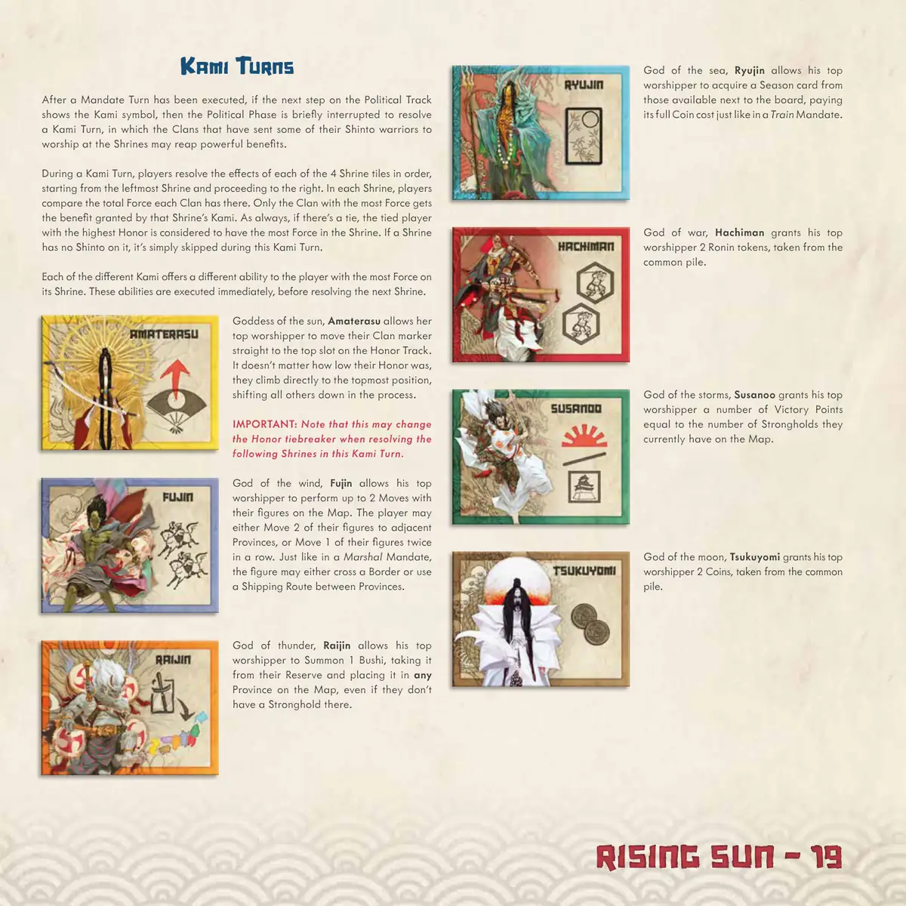
<figcaption>原版规则书 · 第 19 页（点击图片放大）</figcaption>
</figure>

<details class="mt-fold">
<summary>📝 第 19 页 AI 机翻对照（点击展开）</summary>
<div class="mt-body"><h2>升阳 - 19</h2>

<h2>升阳 - 19</h2>

<p>神明回合</p>

<p>在执行完一个命令回合后，如果政治轨道上的下一步显示神明符号，则政治阶段会短暂中断以解决一个神明回合，在此回合中，将部分神明武士派往神社崇拜的氏族可以获得强大的好处。</p>

<p>在神明回合中，玩家按顺序解决4个神社板块的效果，从最左边的神社开始，向右进行。在每个神社中，玩家比较每个氏族在此处的总战力。只有战力最高的氏族才能获得该神社神明授予的好处。一如既往，如果出现平局，荣誉值最高的平局玩家被认为在该神社拥有最高的战力。如果某个神社上没有神明，则在本次神明回合中直接跳过。</p>

<p>每个不同的神明都会对其神社上战力最高的玩家提供不同的能力。这些能力立即执行，在解决下一个神社之前。</p>

<p>太阳女神天照允许她最虔诚的崇拜者将氏族标记直接移动到荣誉轨道的顶部位置。无论他们的荣誉值有多低，他们都会直接攀升到最顶端位置，同时将其他人向下推移。</p>

<p>重要：请注意，这可能会在解决本次神明回合中的后续神社时改变荣誉平局规则。</p>

<p>风神风允许他最虔诚的崇拜者使用他们在地图上的棋子执行最多2次移动。玩家可以将2个棋子移动到相邻的省份，或将1个棋子连续移动两次。就像在元帅命令中一样，棋子可以穿越边境或使用省份间的航运路线。</p>

<p>雷神雷神允许他最虔诚的崇拜者召唤1个武士，从他们的预备区中取出，并放置在地图上的任何省份，即使他们那里没有要塞。</p>

<p>海神龙神允许他最虔诚的崇拜者从版图旁边可用的季节卡中获得一张，支付其全部金币费用，就像在火车命令中一样。</p>

<p>战神八幡神授予他最虔诚的崇拜者2个浪人指示物，取自公共堆。</p>

<p>风暴神素戋呜授予他最虔诚的崇拜者等于他们在地图上当前拥有的要塞数量的胜利点数。</p>

<p>月神月读授予他最虔诚的崇拜者2个金币，取自公共堆。</p></div>
</details>

<figure>
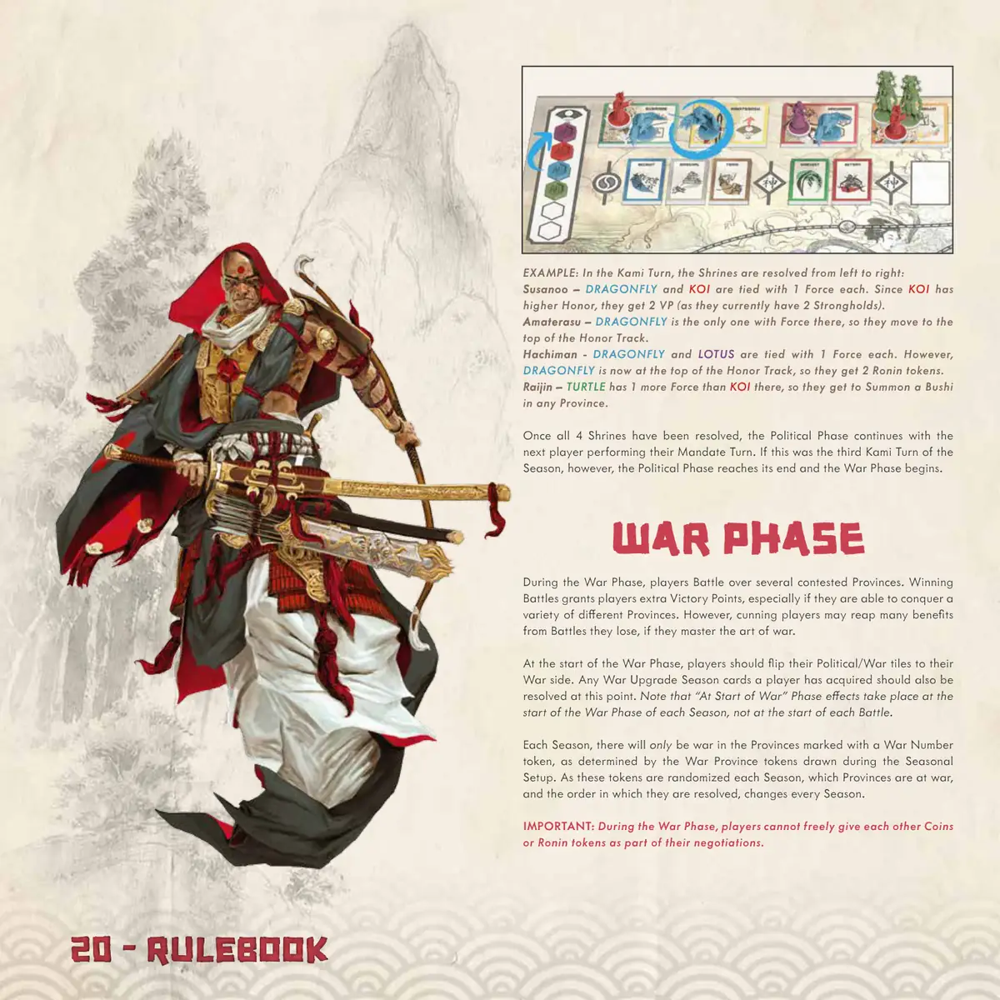
<figcaption>原版规则书 · 第 20 页（点击图片放大）</figcaption>
</figure>

<details class="mt-fold">
<summary>📝 第 20 页 AI 机翻对照（点击展开）</summary>
<div class="mt-body"><h2>20 - 规则书</h2>

<h2>20 - 规则书</h2>

<p>示例：在神明回合中，神社从左到右依次结算：</p>

<p>素盏呜尊 - 蜻蜓和锦鲤各以1点武力打成平局。由于锦鲤拥有更高的荣誉，他们获得2个VP（因为他们当前拥有2个要塞）。</p>

<p>天照 - 蜻蜓是那里唯一拥有武力的，所以他们移动到荣誉轨道的顶端。</p>

<p>八幡神 - 蜻蜓和莲花各以1点武力打成平局。然而，蜻蜓现在位于荣誉轨道的顶端，所以他们获得2个浪人指示物。</p>

<p>雷神 - 乌龟在那里比锦鲤多1点武力，所以他们可以在任何省份召唤一个武士。</p>

<p>一旦所有4个神社都已结算，政治阶段继续，由下一位玩家执行他们的敕令回合。然而，如果这是该季节的第三个神明回合，则政治阶段结束，战争阶段开始。</p>

<p>战争阶段</p>

<p>在战争阶段期间，玩家会在几个有争议的省份进行战斗。赢得战斗可以为玩家带来额外的胜利点，特别是当他们能够征服多种不同省份时。然而，精明的玩家如果掌握了战争的艺术，即使输掉战斗也能获得许多好处。</p>

<p>在战争阶段开始时，玩家应将他们的政治/战争板块翻到战争面。玩家获得的任何战争升级季节卡也应在此点结算。请注意，"战争开始时"阶段效果在每个季节的战争阶段开始时发生，而不是在每次战斗开始时。</p>

<p>每个季节，只有标有战争数字指示物的省份才会发生战争，这些指示物是在季节设置期间抽取的战争省份指示物。由于这些指示物每个季节都是随机化的，哪些省份处于战争状态，以及它们的结算顺序，每个季节都会改变。</p>

<p>重要提示：在战争阶段期间，玩家不能作为谈判的一部分自由地互相给予金币或浪人指示物。</p></div>
</details>

<figure>
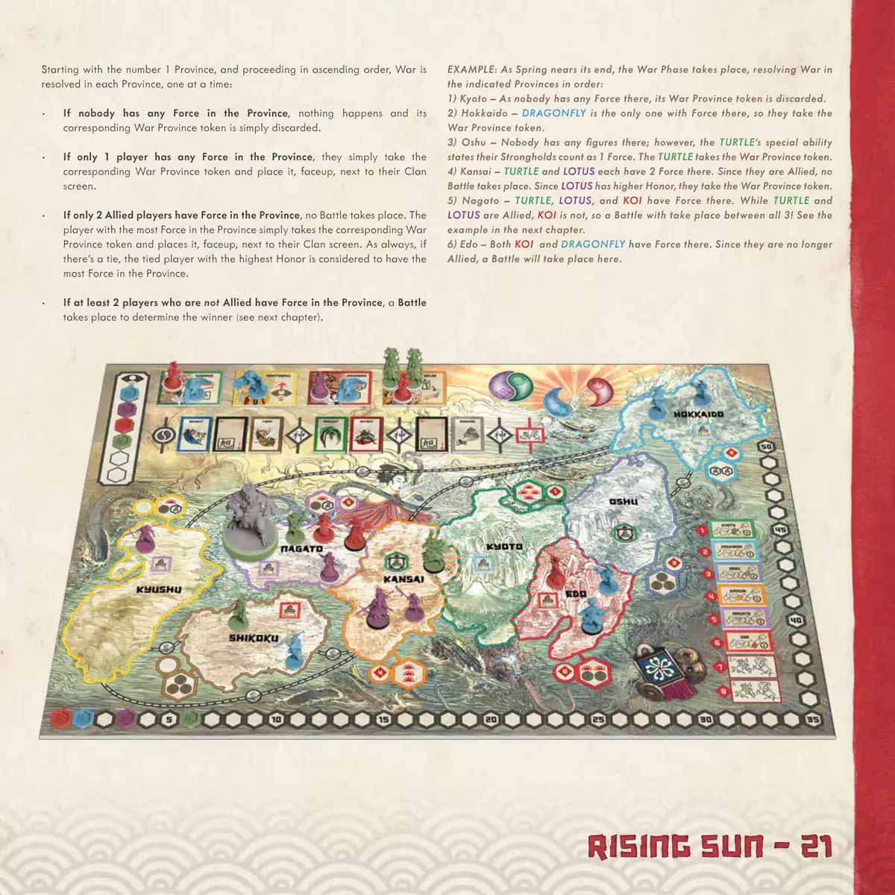
<figcaption>原版规则书 · 第 21 页（点击图片放大）</figcaption>
</figure>

<details class="mt-fold">
<summary>📝 第 21 页 AI 机翻对照（点击展开）</summary>
<div class="mt-body"><h2>旭日东升 - 21</h2>

<p>从1号行省开始，按升序依次解决每个行省的战争，一次一个：</p>

<p>·</p>

<p>如果没有任何玩家在该行省有武力，则什么都不会发生，相应的战争行省指示物直接被弃置。</p>

<p>·</p>

<p>如果只有1名玩家在该行省有武力，他们直接拿取相应的战争行省指示物，正面朝上放置在其氏族屏旁边。</p>

<p>·</p>

<p>如果只有2名盟友玩家在该行省有武力，则不会发生战斗。在该行省拥有最多武力的玩家直接拿取相应的战争行省指示物，正面朝上放置在其氏族屏旁边。一如既往，如果平局，则荣誉最高的平局玩家被认为在该行省拥有最多武力。</p>

<p>·</p>

<p>如果有至少2名非盟友玩家在该行省有武力，则将发生一场战斗以决定胜者（见下一章）。</p>

<p>示例：随着春季接近尾声，战争阶段开始，按顺序解决指定行省的战争：</p>

<ol>
  <li>京都 - 由于没有任何玩家在那里有武力，其战争行省指示物被弃置。</li>
  <li>北海道 - 蜻蜓是唯一在那里有武力的玩家，所以他们拿取战争行省指示物。</li>
  <li>奥州 - 没有任何玩家在那里有棋子；然而，龟氏族的特殊能力说明他们的要塞计为1点武力。龟氏族拿取战争行省指示物。</li>
  <li>关西 - 龟氏族和莲花氏族各自在那里有2点武力。由于他们是盟友，不会发生战斗。由于莲花氏族拥有更高的荣誉，他们拿取战争行省指示物。</li>
  <li>长门 - 龟氏族、莲花氏族和锦鲤氏族在那里有武力。虽然龟氏族和莲花氏族是盟友，但锦鲤氏族不是，所以将在三者之间发生一场战斗！见下一章中的示例。</li>
  <li>江户 - 锦鲤氏族和蜻蜓氏族都在那里有武力。由于他们不再是盟友，将在这里发生一场战斗。</li>
</ol></div>
</details>

<figure>
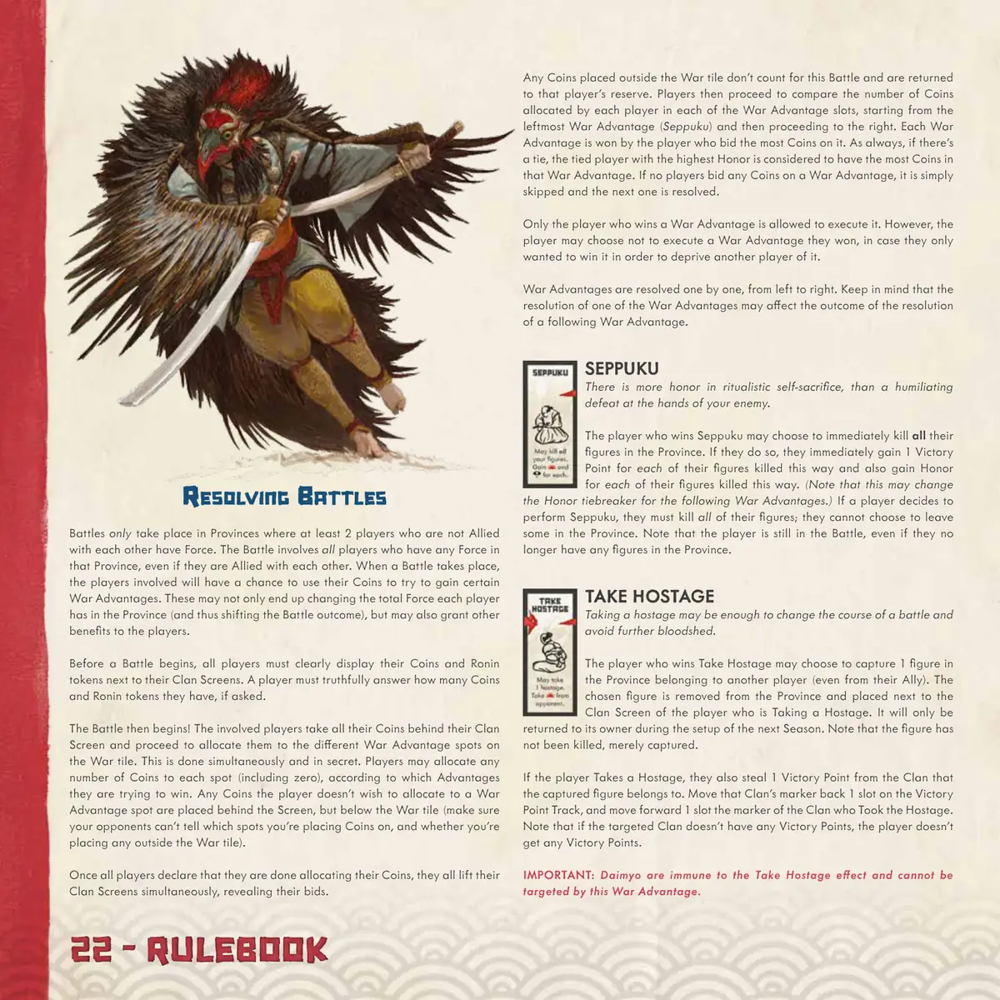
<figcaption>原版规则书 · 第 22 页（点击图片放大）</figcaption>
</figure>

<details class="mt-fold">
<summary>📝 第 22 页 AI 机翻对照（点击展开）</summary>
<div class="mt-body"><h2>22 - 规则书</h2>

<h2>22 - 规则书</h2>

<p>解决战斗</p>

<p>战斗只发生在至少有2名互不结盟的玩家拥有武力的省份。战斗涉及在该省份拥有任何武力的所有玩家，即使他们彼此结盟。当战斗发生时，相关玩家将有机会使用他们的金币来尝试获得某些战争优势。这不仅可能最终改变每个玩家在该省份拥有的总武力（从而改变战斗结果），还可能为玩家提供其他好处。</p>

<p>在战斗开始前，所有玩家必须将其金币和浪人指示物清晰展示在其氏族屏风旁边。如果被问及，玩家必须如实回答他们拥有多少金币和浪人指示物。</p>

<p>然后战斗开始！相关玩家将其所有金币放在氏族屏风后，并将它们分配到战争板块上的不同战争优势位置。这是同时且秘密进行的。玩家可以根据他们试图获得的优势，将任意数量的金币（包括零）分配到每个位置。玩家不希望分配到战争优势位置的金币被放在屏风后，但在战争板块下方（确保你的对手无法分辨你将金币放在了哪些位置，以及你是否在战争板块外放置了任何金币）。</p>

<p>一旦所有玩家宣布完成金币分配，他们同时抬起氏族屏风，揭示他们的竞标。</p>

<p>任何放置在战争板块外的金币不计入本次战斗，并返还给该玩家的储备。然后玩家开始比较每个玩家在每个战争优势槽位中分配的金币数量，从最左边的战争优势（切腹）开始，然后向右进行。每个战争优势由在该位置上竞标最多金币的玩家获得。一如既往，如果有平局，则荣誉最高的平局玩家被认为在该战争优势上拥有最多金币。如果没有玩家在任何战争优势上竞标，则直接跳过，解决下一个。</p>

<p>只有赢得战争优势的玩家才能执行它。然而，玩家可以选择不执行他们赢得的战争优势，以防他们只是为了剥夺其他玩家而赢得它。</p>

<p>战争优势从左到右逐一解决。请注意，一个战争优势的解决可能会影响后续战争优势解决的结果。</p>

<h2>切腹</h2>

<p>仪式性的自我牺牲比被敌人羞辱地 defeat 更有荣誉。</p>

<p>赢得切腹的玩家可以选择立即杀死其在省份内的所有单位。如果他们这样做，他们将立即获得1个胜利点</p>

<p>每被如此杀死的他们的棋子各得1分，并且每被如此杀死的他们的棋子各获得荣誉。（请注意，这可能会改变后续战争优势的荣誉平局 breaker。）如果玩家决定执行切腹，他们必须杀死他们所有的棋子；他们不能选择将一些留在省份中。请注意，即使玩家在省份中不再有任何棋子，他们仍然在战斗中。</p>

<h2>扣为人质</h2>

<p>扣为人质可能足以改变战斗进程，避免进一步的流血。</p>

<p>赢得扣为人质的玩家可以选择捕获属于另一个玩家的1个省份中的棋子（即使是来自他们的盟友）。被选中的棋子从省份中移除，并放置在扣为人质的玩家的氏族屏幕旁边。它只会在下一季的设置期间归还给其所有者。请注意，该棋子没有被杀死，只是被俘虏了。</p>

<p>如果玩家扣为人质，他们还会从被俘棋子所属的氏族偷取1个胜利点。将该氏族的标记在胜利点轨道上向后移动1个位置，并将扣为人质的氏族的标记向前移动1个位置。请注意，如果目标氏族没有任何胜利点，玩家不会获得任何胜利点。</p>

<p>重要提示：大名不受扣为人质效果的影响，不能被此战争优势作为目标。</p></div>
</details>

<figure>
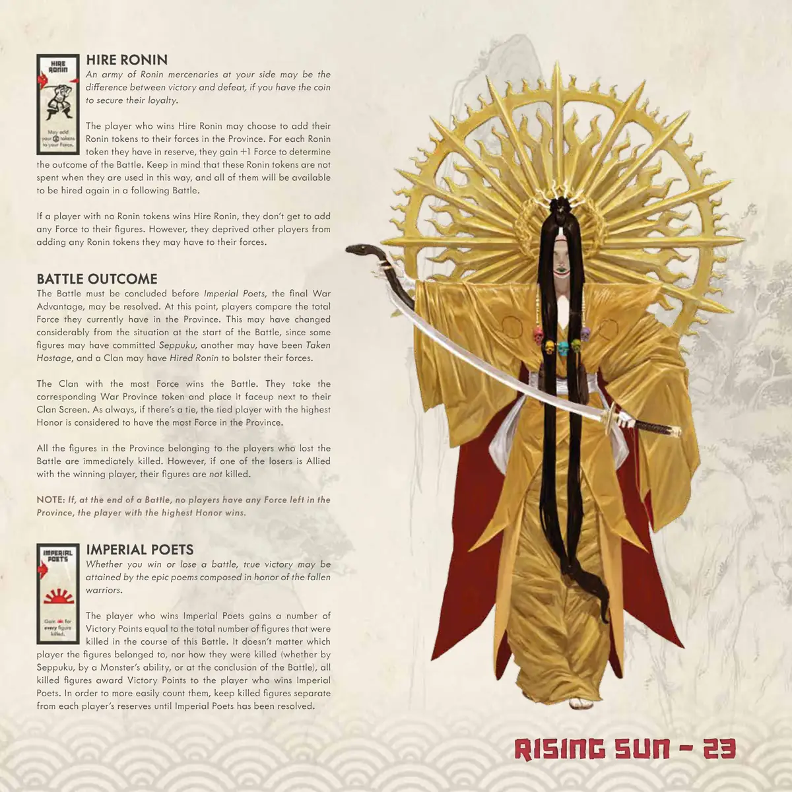
<figcaption>原版规则书 · 第 23 页（点击图片放大）</figcaption>
</figure>

<details class="mt-fold">
<summary>📝 第 23 页 AI 机翻对照（点击展开）</summary>
<div class="mt-body"><h2>旭日东升 - 23</h2>

<h2>雇佣浪人</h2>

<p>一支浪人雇佣军在你身边可能是胜利与失败之间的区别，前提是你有足够的金币来确保他们的忠诚。</p>

<p>赢得雇佣浪人的玩家可以选择将他们的浪人指示物添加到他们省份中的部队中。对于他们储备中的每个浪人指示物，他们在决定战斗结果时获得+1战力。请记住，这些浪人指示物以这种方式使用时不会被消耗，所有这些浪人指示物都将在接下来的战斗中可再次被雇佣。</p>

<p>如果没有浪人指示物的玩家赢得了雇佣浪人，他们不能为他们的任何棋子增加战力。然而，他们阻止了其他玩家将他们可能拥有的任何浪人指示物添加到他们的部队中。</p>

<h2>战斗结果</h2>

<p>必须在帝国诗人（最后的战争优势）被结算前完成战斗。此时，玩家比较他们在省份中当前的总战力。这与战斗开始时的状况可能已经发生了很大变化，因为一些棋子可能已经切腹，另一些可能被扣为人质，而且一个氏族可能已经雇佣了浪人来增强他们的部队。</p>

<p>战力最高的氏族赢得战斗。他们获得相应的战争省份指示物，并将其正面朝上放置在他们的氏族屏旁边。一如既往，如果出现平局，荣誉最高的平局玩家被认为在省份中拥有最多的战力。</p>

<p>所有属于失败玩家的在省份中的棋子立即被消灭。然而，如果失败者之一与获胜者结盟，他们的棋子不会被消灭。</p>

<p>注意：如果在一场战斗结束时，没有玩家在省份中留下任何战力，则荣誉最高的玩家获胜。</p>

<h2>帝国诗人</h2>

<p>无论你是赢是输，通过为阵亡的勇士创作的史诗诗歌，真正的胜利得以实现。</p>

<p>赢得帝国诗人的玩家获得的胜利点数等于在本场战斗中被消灭的棋子总数。这些棋子属于哪个玩家，以及它们是如何被消灭的（无论是通过切腹、通过怪物的能力，还是在战斗结束时）都不重要，所有被消灭的棋子都为赢得帝国诗人的玩家提供胜利点。为了更方便地计算它们，在被消灭的棋子被结算前，将它们与每个玩家的储备分开存放。</p></div>
</details>

<figure>
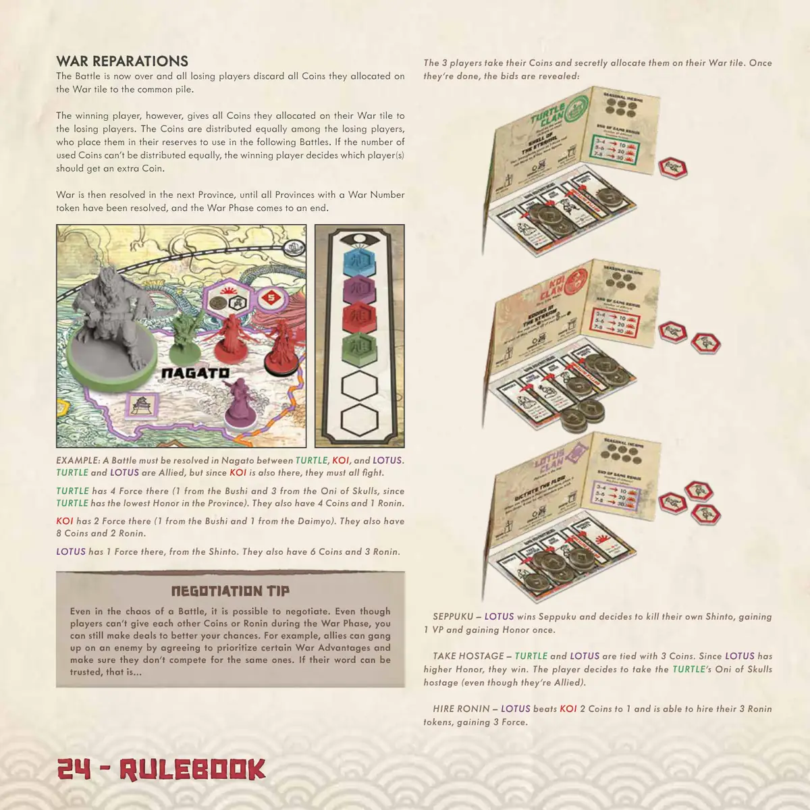
<figcaption>原版规则书 · 第 24 页（点击图片放大）</figcaption>
</figure>

<details class="mt-fold">
<summary>📝 第 24 页 AI 机翻对照（点击展开）</summary>
<div class="mt-body"><h2>24 - 规则书</h2>

<h2>24 - 规则书</h2>

<h2>战争赔偿</h2>

<p>战争现已结束，所有失败玩家将其在战争板块上分配的所有金币弃置到公共堆中。</p>

<p>然而，获胜玩家将其在战争板块上分配的所有金币给予失败玩家。金币平均分配给失败玩家，他们将金币放入储备区，用于接下来的战争。如果分配的金币数量不能平均分配，获胜玩家决定哪个玩家应获得额外金币。</p>

<p>然后在下一个省份解决战争，直到所有带有战争数字指示物的省份都已解决，战争阶段结束。</p>

<p>示例：必须在长门(TURTLE、KOI和LOTUS之间)解决一场战斗。TURTLE和LOTUS是盟友，但由于KOI也在那里，他们必须全部战斗。TURTLE在该地区有4点武力（来自武士1点，来自骷髅鬼3点，因为TURTLE在该省份荣誉最低）。他们还有4个金币和1个浪人。KOI在该地区有2点武力（来自武士1点，来自大名1点）。他们还有8个金币和2个浪人。LOTUS在该地区有1点武力，来自神道。他们还有6个金币和3个浪人。</p>

<p>三位玩家拿出他们的金币，秘密分配在他们的战争板块上。完成后，竞标被揭晓：</p>

<p>切腹(SEPPUKU) – LOTUS赢得切腹，决定杀死自己的神道，获得1个VP并获得一次荣誉。</p>

<p>扣押人质(TAKE HOSTAGE) – TURTLE和LOTUS以3个金币平局。由于LOTUS荣誉更高，他们获胜。玩家决定扣押TURTLE的骷髅鬼人质（尽管他们是盟友）。</p>

<p>雇佣浪人(HIRE RONIN) – LOTUS以2比1击败KOI，能够雇佣他们的3个浪人指示物，获得3点武力。</p>

<p>谈判技巧</p>

<p>即使在混乱的战斗中，也可以进行谈判。尽管玩家在战争阶段不能互相给予金币或浪人，但仍然可以达成交易以提高胜算。例如，盟友可以通过优先考虑某些战争优势并确保他们不竞争相同的优势来联手对付敌人。如果他们的话可信的话...</p></div>
</details>

<figure>
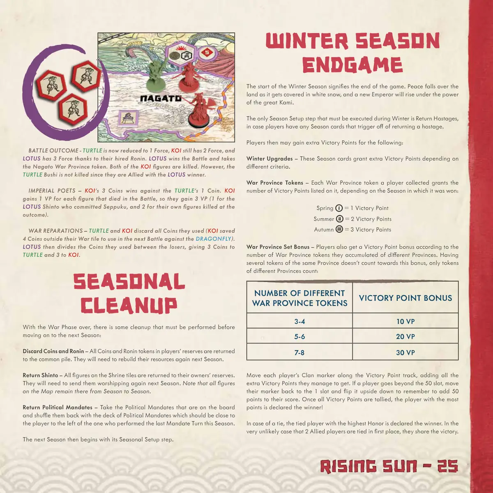
<figcaption>原版规则书 · 第 25 页（点击图片放大）</figcaption>
</figure>

<details class="mt-fold">
<summary>📝 第 25 页 AI 机翻对照（点击展开）</summary>
<div class="mt-body"><h2>升起的太阳 - 25</h2>

<h2>升起的太阳 - 25</h2>

<p>战斗结果 - 龟派(TURTLE)的武力值现在降至1，锦鲤派(KOI)仍有2点武力值，而莲花派(LOTUS)凭借其雇佣的浪人武士拥有3点武力值。莲花派赢得战斗并获得长门省战争省份指示物。锦鲤派的两名棋子均被消灭。然而，龟派的武士没有被消灭，因为他们与获胜的莲花派结盟。</p>

<p>宫廷诗人 - 锦鲤派的3枚金币击败了龟派的1枚金币。锦鲤派因战斗中死亡的每名棋子获得1个VP，因此他们获得3个VP（1个给切腹自尽的莲花派神道教徒，2个给他们在战斗结果中被消灭的自己棋子）。</p>

<p>战争赔款 - 龟派和锦鲤派弃掉他们使用的所有金币（锦鲤派在战争板块外保留了4枚金币，用于下一场对抗蜻蜓派(DRAGONFLY)的战斗）。莲花派然后将他们使用的金币分给失败者，给龟派3枚金币，给锦鲤派3枚金币。</p>

<p>季节性</p>

<p>清理</p>

<p>随着战争阶段结束，在进入下一个季节之前，需要进行一些清理工作：</p>

<p>弃掉金币和浪人 - 所有玩家储备中的金币和浪人指示物均返回公共堆。他们下个季节需要重新建设资源。</p>

<p>归还神道教徒 - 神社板块上的所有棋子均归还给它们的主人。他们下个季节需要再次派他们去参拜。请注意，版图上的所有棋子会一直保留，从一个季节到另一个季节。</p>

<p>归还政治委任 - 将版图上的政治委任牌拿起来，并与政治委任牌牌库一起洗牌，该牌库应位于本季节执行最后一次委任回合的玩家左侧的玩家附近。</p>

<p>然后下一个季节以其季节设置步骤开始。</p>

<p>冬季季节</p>

<p>游戏结束</p>

<p>冬季季节的开始标志着游戏的结束。和平降临大地，大地被白雪覆盖，一位新的皇帝将在伟大神明的力量下崛起。</p>

<p>冬季期间唯一必须执行的季节设置步骤是归还人质，以防玩家有任何在归还人质时触发的季节卡。</p>

<p>然后玩家可能因以下情况获得额外胜利点：</p>

<p>冬季升级 - 这些季节卡根据不同标准授予额外胜利点。</p>

<p>战争省份指示物 - 玩家收集的每个战争省份指示物根据其获胜的季节授予其上列出的胜利点数：</p>

<p>春季 = 1个胜利点</p>

<p>夏季 = 2个胜利点</p>

<p>秋季 = 3个胜利点</p>

<p>战争省份组合奖励 - 玩家还根据他们收集的不同省份的战争省份指示物数量获得胜利点奖励。拥有多个同一省份的指示物不计入此奖励，只有不同省份的指示物才计入：</p>

<p>将每个玩家的氏族标记沿胜利点轨道移动，加上所有</p>

<p>他们额外获得的胜利点数。如果玩家的分数超过了50分位，将其指示物移回1分位并翻转过来，以记住要在其分数上加上50分。一旦所有胜利点数被统计完毕，分数最高的玩家被宣布为获胜者！</p>

<p>如果出现平局，荣誉值最高的平局玩家被宣布为获胜者。在两个盟友玩家并列第一的极不可能的情况下，他们共享胜利。</p>

<h2>不同战争省份板块的数量</h2>

<h2>胜利点数奖励</h2>

<p>3-4</p>

<p>10 VP</p>

<p>5-6</p>

<p>20 VP</p>

<p>7-8</p>

<p>30 VP</p></div>
</details>

<figure>
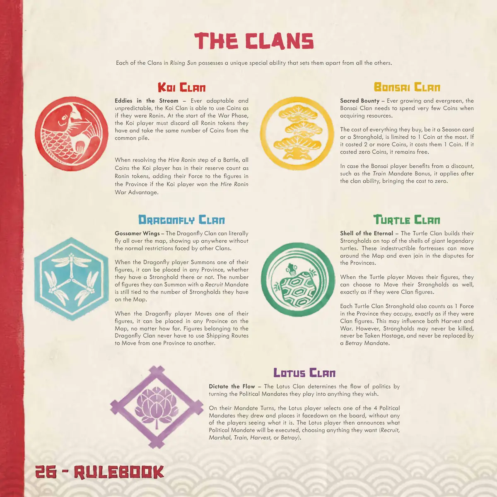
<figcaption>原版规则书 · 第 26 页（点击图片放大）</figcaption>
</figure>

<details class="mt-fold">
<summary>📝 第 26 页 AI 机翻对照（点击展开）</summary>
<div class="mt-body"><h2>26 - 规则书</h2>

<h2>26 - 规则书</h2>

<p>氏族</p>

<p>旭日中的每个氏族都拥有独特的特殊能力，使它们与其他氏族区别开来。</p>

<p>盆栽氏族</p>

<p>神圣恩赐——盆栽氏族不断生长且常青，在获取资源时只需花费很少的硬币。</p>

<p>他们购买的一切，无论是季节卡牌还是要塞，成本最多限制为1枚硬币。如果原本花费2枚或更多硬币，对他们而言只需花费1枚硬币。如果原本花费0枚硬币，则保持免费。</p>

<p>如果盆栽玩家获得折扣，如火车指令奖励，该折扣在氏族能力之后应用，将成本降至零。</p>

<p>锦鲤氏族</p>

<p>溪流中的漩涡——锦鲤氏族适应性强且不可预测，能够将硬币当作浪人使用。</p>

<p>在战争阶段开始时，锦鲤玩家必须弃置他们拥有的所有浪人指示物，并从公共堆中获取相同数量的硬币。</p>

<p>在解决战斗中的雇佣浪人步骤时，锦鲤玩家储备中的所有硬币都算作浪人指示物，如果锦鲤玩家赢得了雇佣浪人战争优势，这些硬币的武力值会加到省份中的单位上。</p>

<p>莲花氏族</p>

<p>掌控流向——莲花氏族通过将他们打出的政治指令转变为他们希望的任何内容来掌控政治流向。</p>

<p>在他们的指令回合，莲花玩家选择他们抽到的4张政治指令中的一张，并将其面朝下放在版图上，没有任何玩家能看到它是什么。然后莲花玩家宣布将执行哪张政治指令，选择他们想要的任何内容（招募、集结、训练、收获或背叛）。</p>

<p>蜻蜓氏族</p>

<p>薄翼——蜻蜓氏族可以真正地在地图上任意飞行，出现在任何地方，不受其他氏族面临的正常限制。</p>

<p>当蜻蜓玩家召唤他们的一个单位时，可以将其放置在任何省份，无论他们是否在那里拥有要塞。他们可以用招募指令召唤的单位数量仍然与他们拥有的要塞数量相关。</p>

<p>当蜻蜓玩家移动他们的一个单位时，可以将其放置在地图上的任何省份，无论距离多远。蜻蜓氏族的单位永远不必使用航运路线从一个省份移动到另一个省份。</p>

<p>龟氏族</p>

<p>永恒之壳——龟氏族将他们的要塞建在巨型传奇乌龟的壳上。这些坚不可摧的堡垒可以在地图上移动，甚至可以加入对省份的争夺。</p>

<p>当龟氏族玩家移动他们的单位时，他们也可以选择移动他们的要塞，完全就像氏族单位一样。</p>

<p>每个龟氏族要塞也占据他们所在省份的1点武力值，完全就像氏族单位一样。这可能会影响收获和</p>

<p>战争。然而，要塞永远不会被杀死，永远不会被扣为人质，也永远不会被背叛指令所取代。</p></div>
</details>

<figure>
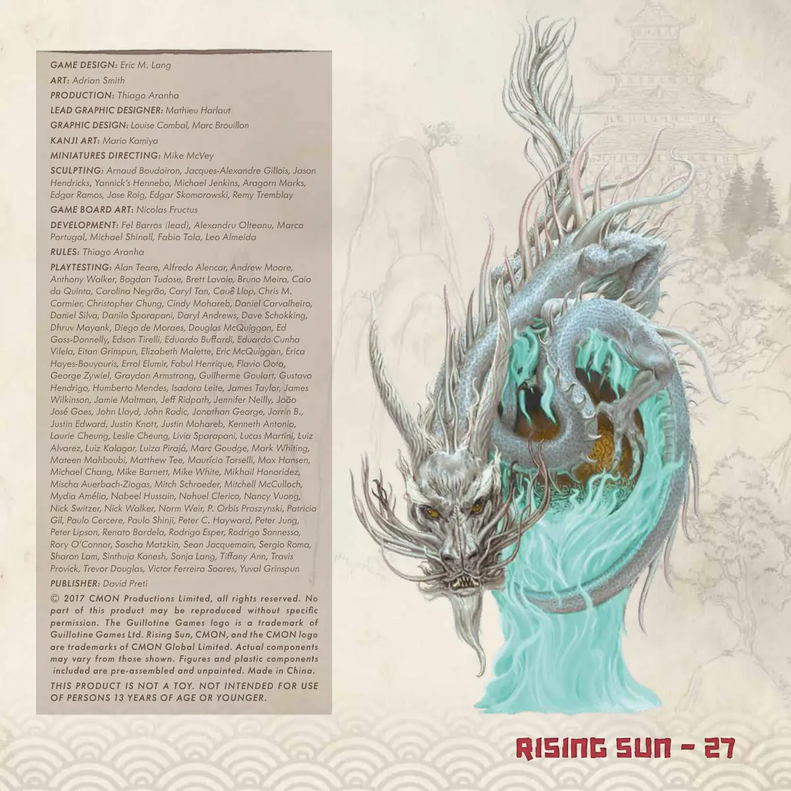
<figcaption>原版规则书 · 第 27 页（点击图片放大）</figcaption>
</figure>

<details class="mt-fold">
<summary>📝 第 27 页 AI 机翻对照（点击展开）</summary>
<div class="mt-body"><h2>旭日东升 - 27</h2>

<h2>旭日东升 - 27</h2>

<p>游戏设计：Eric M. Lang</p>

<p>美术：Adrian Smith</p>

<p>制作：Thiago Aranha</p>

<p>首席平面设计师：Mathieu Harlaut</p>

<p>平面设计：Louise Combal, Marc Brouillon</p>

<p>日文艺术：Mario Kamiya</p>

<p>人偶指导：Mike McVey</p>

<p>雕塑：Arnaud Boudoiron, Jacques-Alexandre Gillois, Jason Hendricks, Yannick's Hennebo, Michael Jenkins, Aragorn Marks, Edgar Ramos, Jose Roig, Edgar Skomorowski, Remy Tremblay</p>

<p>游戏版图艺术：Nicolas Fructus</p>

<p>开发：Fel Barros (主管), Alexandru Olteanu, Marco Portugal, Michael Shinall, Fabio Tola, Leo Almeida</p>

<p>规则：Thiago Aranha</p>

<p>测试：Alan Teare, Alfredo Alencar, Andrew Moore, Anthony Walker, Bogdan Tudose, Brett Lavoie, Bruno Meira, Caio da Quinta, Carolina Negrão, Caryl Tan, Cauê Llop, Chris M. Cormier, Christopher Chung, Cindy Mohareb, Daniel Carvalheiro, Daniel Silva, Danilo Sparapani, Daryl Andrews, Dave Schokking, Dhruv Mayank, Diego de Moraes, Douglas McQuiggan, Ed Gass-Donnelly, Edson Tirelli, Eduardo Buffardi, Eduardo Cunha Vilela, Eitan Grinspun, Elizabeth Malette, Eric McQuiggan, Erica Hayes-Bouyouris, Errol Elumir, Fabul Henrique, Flavio Oota, George Zywiel, Graydon Armstrong, Guilherme Goulart, Gustavo Hendrigo, Humberto Mendes, Isadora Leite, James Taylor, James Wilkinson, Jamie Maltman, Jeff Ridpath, Jennifer Neilly, João José Goes, John Lloyd, John Radic, Jonathan George, Jorrin B., Justin Edward, Justin Knott, Justin Mohareb, Kenneth Antonio, Laurie Cheung, Leslie Cheung, Livia Sparapani, Lucas Martini, Luiz Alvarez, Luiz Kalagar, Luiza Pirajá, Marc Goudge, Mark Whiting, Mateen Mahboubi, Matthew Tee, Maurício Torselli, Max Hansen, Michael Chang, Mike Barnett, Mike White, Mikhail Honoridez, Mischa Auerbach-Ziogas, Mitch Schroeder, Mitchell McCulloch, Mydia Amélia, Nabeel Hussain, Nahuel Clerico, Nancy Vuong, Nick Switzer, Nick Walker, Norm Weir, P. Orbis Proszynski, Patricia Gil, Paulo Cercere, Paulo Shinji, Peter C. Hayward, Peter Jung, Peter Lipson, Renato Bardela, Rodrigo Esper, Rodrigo Sonnesso, Rory O'Connor, Sascha Matzkin, Sean Jacquemain, Sergio Roma, Sharon Lam, Sinthuja Kanesh, Sonja Lang, Tiffany Ann, Travis Provick, Trevor Douglas, Victor Ferreira Soares, Yuval Grinspun</p>

<p>出版商：David Preti</p>

<p>© 2017 CMON Productions Limited，保留所有权利。未经特别许可，不得复制本产品的任何部分。断头台游戏公司标志是Guillotine Games Ltd.的商标。旭日东升、CMON和CMON标志是CMON Global Limited的商标。实际组件可能与所示有所不同。包含的人偶和塑料组件为预组装且未上漆。中国制造。</p>

<h2>本产品不是玩具。不适用于13岁及以下人士。</h2></div>
</details>

<figure>
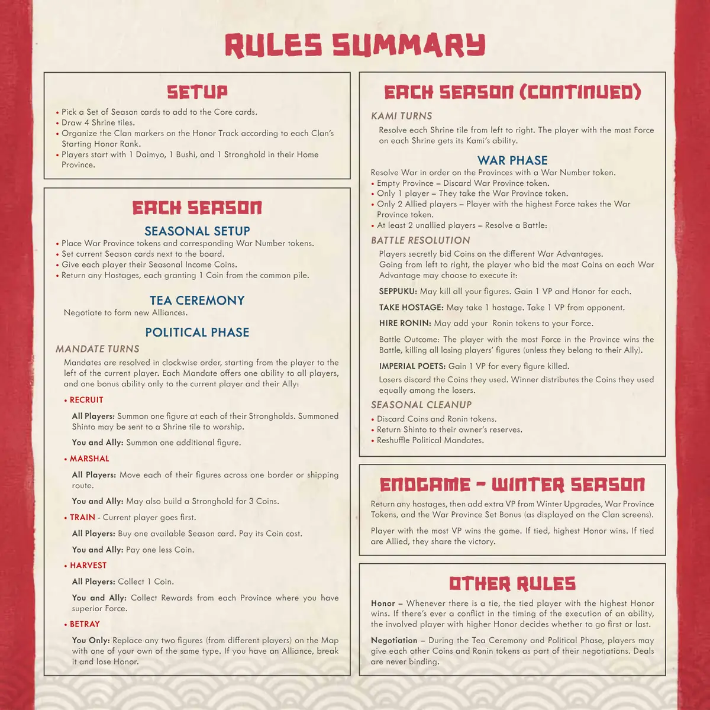
<figcaption>原版规则书 · 第 28 页（点击图片放大）</figcaption>
</figure>

<details class="mt-fold">
<summary>📝 第 28 页 AI 机翻对照（点击展开）</summary>
<div class="mt-body"><p>规则摘要</p>

<h2>设置</h2>

<p>• 选择一组季节卡牌添加到核心卡牌中。</p>

<p>• 抽取4座神社板块。</p>

<p>• 根据每个氏族的起始荣誉等级，将氏族标记整理在荣誉轨道上。</p>

<p>• 玩家在自己的家乡省份开始时拥有1个大名、1个武士和1座要塞。</p>

<h2>每个季节</h2>

<h2>季节设置</h2>

<p>• 放置战争省份指示物和相应的战争数字指示物。</p>

<p>• 将当前季节卡牌放在版图旁边。</p>

<p>• 给每位玩家他们的季节收入金币。</p>

<p>• 归还任何人质，每个人质从公共堆中获得1枚金币。</p>

<h2>茶会</h2>

<p>协商以形成新的联盟。</p>

<h2>政治阶段</h2>

<h2>命令回合</h2>

<p>命令按顺时针顺序解决，从当前玩家左侧的玩家开始。每个命令为所有玩家提供一个能力，并为当前玩家及其盟友提供一个额外能力：</p>

<h2>• 招募</h2>

<p>所有玩家：在每个要塞召唤一个单位。召唤的神社武士可以被派往神社板块进行崇拜。</p>

<p>你和盟友：额外召唤一个单位。</p>

<h2>• 调动</h2>

<p>所有玩家：将他们的每个单位移动一个边界或航运路线。</p>

<p>你和盟友：也可以花费3枚金币建造一座要塞。</p>

<p>• 训练 - 当前玩家先行动。</p>

<p>所有玩家：购买一张可用的季节卡牌。支付其金币费用。</p>

<p>你和盟友：少支付1枚金币。</p>

<h2>• 收获</h2>

<p>所有玩家：收集1枚金币。</p>

<p>你和盟友：在每个你拥有优势武力的省份获得奖励。</p>

<h2>• 背叛</h2>

<p>仅你：将地图上来自不同玩家的任意两个单位替换成你自己的同类型单位。如果你有一个联盟，则打破它并失去荣誉。</p>

<h2>每个季节（续）</h2>

<h2>神明回合</h2>

<p>从左到右解决每个神社板块。在每个神社上拥有最多武力的玩家获得该神明的能力。</p>

<h2>战争阶段</h2>

<p>按顺序解决有战争数字指示物的省份的战争。</p>

<p>• 空省份 - 弃置战争省份指示物。</p>

<p>• 只有1名玩家 - 他们获得战争省份指示物。</p>

<p>• 只有2名盟友玩家 - 拥有最高武力的玩家获得战争省份指示物。</p>

<p>• 至少2名非盟友玩家 - 解决一场战斗：</p>

<h2>战斗结算</h2>

<p>玩家秘密在不同的战争优势上竞标金币。</p>

<p>从左到右，在每个战争优势上出价最多的玩家可以选择执行它：</p>

<p>切腹：可以杀死你所有的单位。每个单位获得1VP和荣誉。</p>

<p>俘获人质：可以俘获1名人质。从对手处获得1VP。</p>

<p>雇佣浪人：可以将你的浪人指示物添加到你的武力中。</p>

<p>战斗结果：在省份中拥有最多武力的玩家赢得战斗，杀死所有失败玩家的单位（除非他们属于其盟友）。</p>

<p>宫廷诗人：每杀死一个单位获得1VP。</p>

<p>失败者弃置他们使用的金币。胜利者将他们使用的金币平均分配给失败者。</p>

<h2>季节清理</h2>

<p>• 弃置金币和浪人指示物。</p>

<p>• 将神道教（Shinto）归还给其所有者的储备区。</p>

<p>• 重新洗牌政治委任（Political Mandates）。</p>

<h2>其他规则</h2>

<p>荣誉（Honor）- 每当出现平局时，荣誉最高的平局玩家获胜。如果在执行能力的时机上存在冲突，荣誉较高的相关玩家决定是先执行还是后执行。</p>

<p>谈判（Negotiation）- 在茶道仪式（Tea Ceremony）和政治阶段（Political Phase），玩家可以在谈判过程中互相给予金币（Coins）和浪人指示物（Ronin tokens）。交易永远不具有约束力。</p>

<h2>游戏结束 - 冬季季节</h2>

<p>归还所有人质，然后从冬季升级（Winter Upgrades）、战争省份指示物（War Province Tokens）和战争省份组合奖励（War Province Set Bonus）（如氏族屏幕上所示）中添加额外的VP。VP最多的玩家赢得游戏。如果平局，则荣誉最高者获胜。如果平局者是盟友（Allied），他们共享胜利。</p></div>
</details>
        </div>

        <footer class="source-note">
<p>来源：<a href="https://resources.cmon.com/Rising_Sun_Rulebook.pdf" target="_blank" rel="noopener">CMON 官方</a>（2018 Rising_Sun_Rulebook.pdf）· 译文仅供个人学习查阅，规则内容归 CMON 及版权方所有 · 原文版權與商标归原出版方。</p>
</footer>
      </article>
    </main>
  </div>

  <button class="to-top" aria-label="返回顶部" data-i18n-aria="backTop">↑</button>
  <script src="../assets/js/i18n.js"></script>
  <script src="../assets/js/main.js"></script>
</body>
</html>
